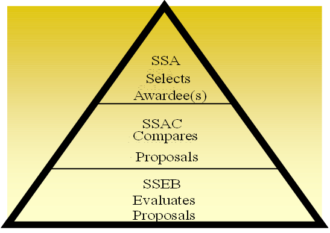
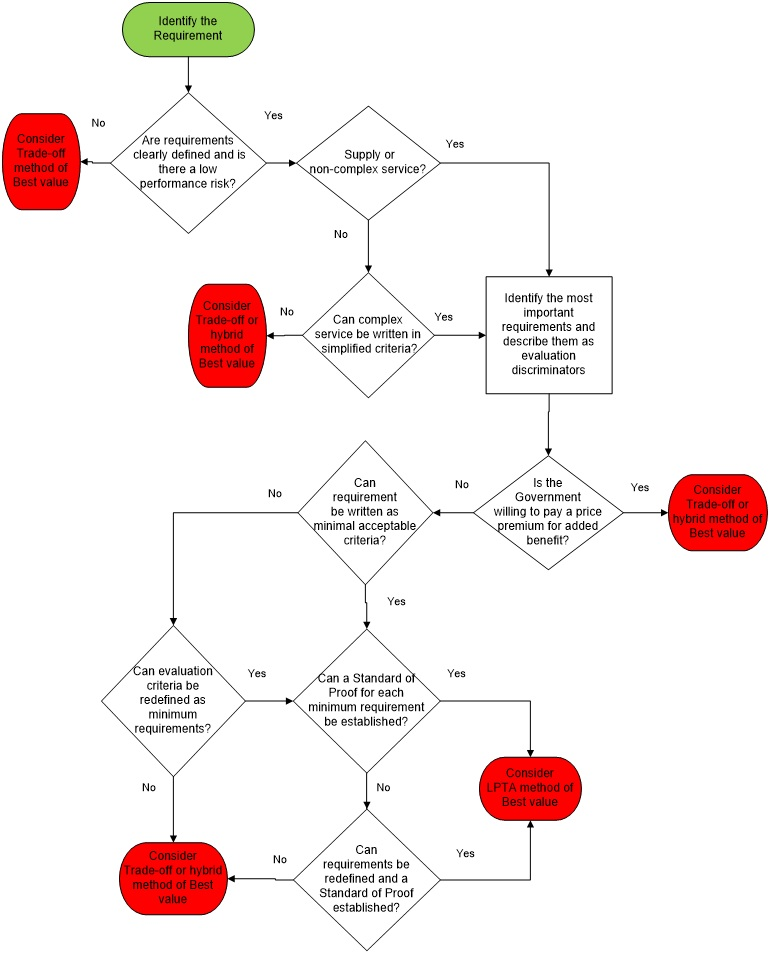

AFARS – APPENDIX AA
ARMY SOURCE SELECTION SUPPLEMENT
CHAPTER 1: PURPOSE, ROLES, AND RESPONSIBILITIES
1.4 Source Selection Team Roles & Responsibilities
CHAPTER 2: PRESOLICITATION ACTIVITIES
2.1 Conduct Acquisition Planning
2.2 Develop a Source Selection Plan
2.3 Develop the Request for Proposals
2.4 Release the Request for Proposals – No Army Text
CHAPTER 3: EVALUATION AND DECISION PROCESS
3.2 Documentation of Initial Evaluation Results
3.4 Competitive Range Decision Document – No Army Text
3.6 Final Proposal Revisions – No Army Text
3.7 Documentation of Final Evaluation Results
3.8 Conduct and Document the Comparative Analysis
3.9 Best–Value Decision – No Army Text
3.10Source Selection Decision Document – No Army Text
3.11 Debriefings – See Appendix A
3.12 Integrating Proposal into the Contract
CHAPTER 4: DOCUMENTATION REQUIREMENTS
4.1 Minimum Requirements – No Army Text
4.2 Electronic Source Selection
Oral Presentations and Proposals
ARMY SOURCE SELECTION SUPPLEMENT
28 November 2017
(Appendix G revised 14 October 2018)
CHAPTER 1: PURPOSE, ROLES, AND RESPONSIBILITIES
1.1 Purpose
The Army Source Selection Supplement (AS3) implements and supplements the mandatory Department of Defense (DoD) Source Selection Procedures to establish consistent policies and procedures for Army source selections. The Federal Acquisition Regulation (FAR) and its supplements (Defense FAR Supplement (DFARS) and Army FAR Supplement (AFARS)) prescribe the general policies governing these acquisitions.
1.2 Applicability and Waivers
The AS3 applies to best value, negotiated, competitive source selections with an estimated value greater than $10 million. It may also be used as guidance in all other acquisitions. See DoD Source Selection Procedures, Paragraph 1.2, for applicability and exceptions.
The AS3 is not a stand-alone document, and shall be used in conjunction with FAR Part 15, DFARS Part 215 and the DoD Source Selection Procedures. Any conflicts shall be resolved through the Office of the Deputy Assistant Secretary of the Army (Procurement) (DASA(P)), Policy Directorate.
Any request for waiver of the DoD Source Selection Procedures shall be submitted by the cognizant Senior Contracting Official (SCO), through the Head of the Contracting Activity (HCA), to the DASA(P), Attn: Policy Directorate (SAAL-PP). The Office of the DASA(P) will process all waivers as follows:
For solicitations valued at $1 billion or more, waivers may only be approved with the express, written permission of the Director, Defense Procurement and Acquisition Policy (DPAP);
For solicitations valued below $1 billion, waivers must be approved by the DASA(P).
1.3 Best Value Continuum
Subjective Tradeoff . Use of subjective tradeoff is appropriate for most Army source selections. See Appendix B for more information. (Reference DOD Source Selection Procedures 1.3.1.3)
Value Adjusted Total Evaluated Price (VATEP). Use of VATEP may be most suitable for procuring developmental items when the Government can determine the value (or worth) of “better performance” and quantify it in the Request for Proposal (RFP). See Appendix B for more information. (Reference DOD Source Selection Procedures 1.3.1. 4 )
1.4 Source Selection Team Roles & Responsibilities
Source selection is a multi-disciplined team effort. The Source Selection Team (SST) should include representatives from appropriate functional areas such as contracting, small business, technical, logistics, cost/price, legal, and program management. User organizations should also be represented.
The success of any source selection is determined to a large degree by the personnel involved. Likewise, the Source Selection Authority (SSA), with assistance from the SCO, will ensure the appointment of people with the requisite skills, expertise, and experience to ensure the success of the source selection. This includes those members appointed to the Source Selection Advisory Council (SSAC).
The SCO is responsible for determining the capability of the organization to effectively resource the SST as set forth in the hierarchy of source selection expertise below (see Figure 1-1). In the event the SCO determines the required expertise is not obtainable, the HCA will be consulted. If the HCA concurs the resources are still unavailable, the DASA(P) will be notified and will assist in providing resources from other contracting activities, or assign the procurement to another contracting activity for execution.
|
Look within own organization for expertise. Identify and appoint Government personnel outside own organization with the requisite expertise. Identify junior personnel to grow expertise and experience in source selection by allowing them to participate on non-technical factors. If expertise does not exist, then move acquisition elsewhere. Consider establishing and/or hiring, on an ad hoc basis, qualified retired annuitants to supplement source selection teams. Establish an advance pool of experts to supplement on an ad hoc and rotational basis. In accordance with FAR Subparts 7.5 and 9.5, hire contractor experts to augment the Source Selection Evaluation Board (SSEB) ensuring there is no organizational conflict of interest or inclusion of inherently governmental functions. |
Figure 1-1: Hierarchy of Source Selection Expertise
The size and composition of the SST will vary depending upon the requirements of each acquisition. For example, major hardware acquisitions frequently involve requirements organizations from across the Army (or from other services on joint-service programs). In such cases, and when forming the SST, SSEB Factor/Subfactor teams should include evaluator representation from each major requirements organization. These evaluators should be assigned to the evaluation criteria associated with their specific area of requirements interest. Inclusion of technical evaluators who are subject matter experts on the requirement(s) being evaluated is essential to a successful evaluation process and fair/accurate assessment of the proposals, and absolutely critical where joint-service and/or multiple functional requirements are involved.
Whether the team is large or small, it should be structured to ensure teamwork, unity of purpose, and appropriate open communication among the team members throughout the process. This will facilitate a comprehensive evaluation and selection of the best value proposal.
Key Components of the SST
For source selections with a total estimated value of $100M or more, the SST shall consist of the SSA, a SSAC, and an SSEB. Each of these SST entities has distinct and separate functions (See Figure 1-2).

Figure 1-2: SST Responsibilities
The SSEB is usually comprised of multiple groups of evaluators who are responsible for evaluating specific areas of the proposal against the RFP requirements. Additionally, legal counsel, small business advisors, cost/price, and technical experts may also serve as SST advisors. The precise structure of the SSEB is a matter within the SSA’s discretion.
The information below supplements the Roles and Responsibilities found in the DoD Source Selection Procedures (see paragraph 1.4).
The SSA.
Appointment. The AFARS 5115.303 provides the policy on SSA appointments.
All appointed SSAs are considered procurement officials and are subject to the associated statutory / regulatory rules.
Once appointed, the SSA cannot further delegate their SSA authorities.
Note: The identity of the SSA shall be considered procurement sensitive and shall not be disclosed to anyone who has not signed a non-disclosure agreement for that RFP / acquisition.
Ensure the Source Selection Plan (SSP) and evaluation criteria are consistent with the requirements of the solicitation and applicable regulations.
The Procuring Contracting Officer (PCO).
No Army text.
The SSAC.
The SSAC will consist of senior Government personnel, and may include representation from the cognizant contracting office and legal office.
For Acquisition Category I/II Source Selections involving requirements organizations from across the Army (or from other services on joint-service programs), the SSAC must include representation from all significant requirements organizations. The SSAC representatives must be at an organization / grade level commensurate with the other members of the SSAC, usually military 0-6/GS-15 or higher.
The SSEB.
The SSEB Chairperson.
Ensure the SSEB members understand the evaluation criteria and establish a uniform approach to the evaluation and rating effort. Seek to build consensus among the SSEB members.
Isolate policy issues and major questions requiring decision by the SSA.
Relieve and replace SSEB members from assignment only in the event of a demonstrated emergency or other appropriate cause.
Arrange for the SSEB members to work compensatory time, when necessary, authorized, and approved.
Arrange for the needed administrative staff at the evaluation work site.
The SSEB Members.
Prepare the evaluation notices (ENs).
Brief the SSAC/SSA (as requested), and respond to comments / instructions from the SSAC/SSA.
Legal Counsel.
No Army text.
Other Advisors.
No Army text.
Program Manager (PM) / Requiring Activity (RA).
No Army text.
Administrative Support.
Each acquisition will vary in terms of the administrative support requirements. Figure 1-3 contains a checklist of some important requirements common to many acquisitions.
|
Adequate facilities (to include space for the evaluators and related meetings and for discussions with Offerors): Consider whether the facilities are of an adequate size, capable of segregation of committees, comfortable, properly furnished, secure, accessible to disabled persons, and close to support services such as copiers, restrooms, and eating facilities. Appropriate security controls, such as identification badges and access control. Adequate secure storage space for proposals and source selection materials. Appropriate computer hardware and software and related support. Adequate telephones, facsimile machines, copiers and/or printing services located in secure areas and secure audio/video teleconferencing capabilities. Adequate office supplies. Adequate lodging and transportation for personnel on temporary duty (TDY). |
Figure 1-3: Administrative Support Considerations
CHAPTER 2: PRESOLICITATION ACTIVITIES
2.1 Conduct Acquisition Planning
Acquisition Planning. Acquisition planning should start when an agency identifies a need for supplies, construction and/or services. When practical, utilize an Integrated Product Team (IPT) approach to develop the acquisition strategy. This early teaming effort may reduce false starts and resultant delays that frequently accompany the preparation of a complex procurement. (Reference DOD Source Selection Procedures 2.1.1 )
Best Practice: Some of the decisions/determinations made during the planning phase are key and will impact the entire acquisition from source selection through contract administration. Including key stakeholders, such as contract administrators, Contracting Officer’s Representatives (CORs), Quality Assurance (QA) and Property Administrator, will help to ensure consideration of issues that may impact the requirements, performance, and acquisition strategy as a whole.
Risk Assessment. Risk analysis is a critical component of acquisition planning, and the market research results should be a primary consideration as part of this analysis. Early identification, formation, and direct involvement of the acquisition team (and key stakeholders) will help to ensure a comprehensive understanding of the requirements and any marketplace influences on risk and risk mitigation. (Reference DOD Source Selection Procedures 2.1.1.2 )
Peer Reviews. See AFARS 5101.170 for Preaward peer reviews. Planning, and including realistic time allowances, for all requisite reviews when establishing milestone schedules is essential to the success of your acquisition.
Market Research. Market research is a continuous process and directly influences how the acquisition strategy and source selection process is shaped. (Reference DOD Source Selection Procedures 2.1.2 and AFARS 5110.002).
Some techniques you may use in conducting market research include:
Use general sources of information available from the marketplace, other DOD/ government agencies, and the internet;
Contact knowledgeable individuals regarding market capabilities and business practices (include the Small Business Advisor);
Review the results of recent market research;
Query government and/or commercial databases;
2.2 Develop a Source Selection Plan
Selection of Evaluation Factors . Selecting the correct evaluation factors is the most important decision in the evaluation process. Structure the evaluation factors and their relative importance to clearly reflect the needs of your acquisition.
Mandatory Evaluation Considerations . In every source selection, you must evaluate cost/price, and the technical quality of the proposed product or service through one or more non-cost evaluation factors (e.g. technical excellence, management capability, and key personnel qualifications).
Additionally, you must evaluate past performance on all negotiated competitive acquisitions expected to exceed the thresholds identified in FAR 15.304 and DFARS 215.304, unless the PCO documents why it would not be appropriate. There may be other required evaluation factors, such as small business participation, based upon regulatory and/or statutory requirements (see FAR 15.304 and its supplements).
From this point, the acquisition team must apply prudent business judgement to add other evaluation factors, subfactors, and elements that are important to selecting the most advantageous proposal(s). The number of factors and subfactors should be kept to the absolute minimum required to effectively assess the proposals. The use of more factors than needed to conduct the evaluation can complicate and extend the process while providing no additional value, and dilute the meaningful discriminators. Limiting factors also serves to reduce the evaluation oversight span-of-control responsibilities of the SSEB leadership, SSA/SSAC, PCO and legal counsel, thereby permitting more focused oversight on the remaining (and most important) factors/subfactors and reducing the likelihood of evaluation errors.
Common evaluation factors are cost/price, technical, past performance, and small business participation. Additionally, as appropriate, you may have other evaluation factors and/or may use one or more levels of subfactors. The standard Army naming convention for the various levels is: Evaluation Factor, Subfactor, and Element.

Figure 2-1: Sample Evaluation Factor Structure
Establishing Evaluation Factors and Subfactors . The acquisition team develops the evaluation factors, and any appropriate subfactors and elements. The team should select the factors based on user requirements, acquisition objectives, thorough market research and risk analysis. Figure 2-2 illustrates the steps involved in developing the factors and subfactors.
Once the RFP is issued, the factors and subfactors give the offerors insight into the significant considerations the Government will use in selecting the best value proposal and help them to understand the source selection process. Carefully consider whether minimum “go/no go” or “pass/fail” entry-gates, can be included. When used properly, this use of entry-gate criteria can streamline the evaluation process significantly.
|
Conduct market research as a starting point for development of criteria in order to maximize competition Conduct risk analysis in accordance with FAR 7.105 as necessary to support the acquisition. Brainstorm critical factors and subfactors. Identify key discriminators. Define the discriminators as evaluation factors and subfactors, and their relative order of importance. Obtain SSA approval of the list of factors and subfactors. When a draft RFP is used, clearly inform offerors in the draft RFP of the proposed factors and subfactors, and their relative order of importance. Assess feedback during presolicitation exchanges. Get SSA approval as necessary to change the factors and subfactors before issuing the RFP. Clearly inform offerors of the factors and subfactors, and their relative importance, in the formal RFP. Do not change the factors and subfactors after receipt of proposals except in extreme circumstances, and only then after obtaining SSA?s approval and amending the RFP and SSP. |
Figure 2-2 : Steps Involved in Formulating Evaluation Factors and Subfactors
Nongovernment Advisors . Nongovernment advisors may assist in, and provide input, regarding the evaluation, but they shall not determine ratings or rankings of the offeror’s proposals. Nongovernment sources can include academia, nonprofit institutions, and industry.
Reminder: When using nongovernment advisors, you must advise potential offerors of the nongovernment advisors’ participation in the source selection, and obtain the offerors consent to provide access of its proprietary information to the nongovernment advisor, or the company which employs the nongovernment advisor. Figure 2-3 identifies suggested RFP language relative to the use of commercial firms to support the source selection process. (Reference DOD Source Selection Procedures 2.2.8)
|
(1) Offerors are advised that employees of the firms identified below may serve as non-government advisors in the source selection process. These individuals will be authorized access only to those portions of the proposal data and discussions that are necessary to enable them to perform their respective duties. Such firms are expressly prohibited from competing on the subject acquisition. INSERT NAMES, ADDRESSES, AND TELEPHONE NUMBERS OF FIRMS (2) In accomplishing their duties related to the source selection process, the aforementioned firms may require access to proprietary information contained in the offerors' proposals. Therefore, pursuant to FAR 9.505?4, these firms must execute an agreement with each offeror that states that they will (1) protect the offerors? information from unauthorized use or disclosure for as long as it remains proprietary and (2) refrain from using the information for any purpose other than that for which it was furnished. To expedite the evaluation process, each offeror must contact the above companies to effect execution of such an agreement prior to the submission of proposals. Each offeror shall submit copies of the agreement with their proposal. NOTE: This requirement shall flow down to all Subcontractors. |
Figure 2-3: Suggested RFP Language for the use of Nongovernment Advisors
Source Selection for Services . The source selection process for services, including development of the SSP, is often very complex. Organizations must ensure that the SST is comprised of qualified personnel with specific knowledge of the types of services to be acquired.
The use of Sample Tasks is an effective tool in the evaluation of services. Sample Tasks can provide insight as to the offeror’s level of understanding of the work to be performed, as well as how the technical approach relates to the cost/price proposed for that Sample Task. See Appendix G for a sample of a Sample Task.
To the maximum extent practicable, sample tasks should set forth requirements that are contemplated for award to establish the expectation that offerors will be held accountable for the resources and costs they propose.
The use of generic or hypothetical sample tasks may unintentionally create an environment encouraging offerors to understate resources and costs in recognition of the fact that the sample tasks will not be awarded. Consequently, care must be taken to draft the sample tasks as closely as possible to the types and scope of services expected to be acquired from the Performance Work Statement (PWS). If possible, consider the use of a “live” task, which would be awarded at time of contract award.
Evaluation criteria should be limited to essential areas of performance that are measurable during the proposal evaluation process. This will permit a more focused evaluation of the offeror's proposed solution to the sample task.
If utilizing a sample task, ensure this is accounted for and aligned with Sections L and M.
2.3 Develop the Request for Proposals
The success of an acquisition is directly linked to the quality of the RFP. A well-written RFP will:
Facilitate fair competition;
Convey a clear understanding of the government’s requirements;
Clearly identify the evaluation and award criteria;
Clearly detail information required by the offerors;
Limit criteria to discriminators that add value and reduce risk;
Preserve the offeror’s flexibility to propose innovative solutions when appropriate;
Specify areas where the offerors can make technical and cost tradeoffs in their proposals;
Ensure that Sections L and M relate back to each other and the SSP.
Ways to Improve the RFP Process
Ensure Consistency in the RFP and Related Documents. RFP inconsistencies can create ambiguity and result in less advantageous offers, require RFP amendments, cause delays in the acquisition, and result in litigation. Inconsistencies between the descriptions of the Government’s requirements, instructions on how to prepare a proposal, and information related to the evaluation factors and subfactors are particularly troublesome (may be caused by different groups of people developing the different RFP sections without proper coordination and review). Additionally, when one document is revised, those revisions must also be made to corresponding documents.
You may find it beneficial to develop a matrix that correlates the RFP sections and content to ensure consistency. Figure 2-4 illustrates how the key documents and evaluation standards map to one another and shows the recommended sequencing for document preparation. Provide industry with a copy of the matrix (make it part of the solicitation) as a reference tool to aid in proposal preparation. You may also consider including a column for offerors to complete in the tracking matrix (as shown in Figure 2-4), denoting where in their proposal the requirement is addressed. This approach promotes understanding of the linkage within the solicitation, explains how all parts of the proposal will be used in the evaluation process, and enables a crosswalk for both the government and offerors to ensure all requirements have been addressed.
|
SPECIFICATION AND PWS |
EVALUATION FACTORS, SUBFACTORS EVALUATION AND SUBMISSION INFORMATION |
PROPOSAL REFERENCE |
||
|
SPECIFICATION |
PWS |
PROPOSAL EVALUATION INFORMATION RFP Section M Factor - Technical Subfactor - Software Modification Approach |
PROPOSAL SUBMISSION INFORMATION RFP Section L |
OFFEROR TO COMPLETE Provide Page and Paragraph Number Where Addressed |
|
Software code shall meet the computer software design and coding requirements as defined in International Standards Organization (ISO) 9000-3. |
3.1.1. The contractor shall modify, integrate and test software as specified in the system Specification. 3.1.1.3 The contractor shall prepare a software modification plan. |
The offeror's software modification approach will be evaluated relative to the modified software’s ability to accommodate open architecture, tracking accuracy, and reliability. |
The offeror will describe its approach to software modification and explain how the software will accommodate open architecture, conforms to ISO-9000-3, tracks accurately, and maintains reliability. |
|
Figure 2-4 Requirements to RFP to Proposal Tracking Matrix
Avoid Requesting Too Much Information from the Offerors. Instructions for preparing and submitting proposals are critical to the acquisition. Always keep in mind:
There must be a direct linkage between solicitation requirements and objectives, each evaluation factor and subfactor, and the proposal preparation instructions.
Request only the essential information needed to evaluate proposals against the evaluation factors and subfactors.
Never ask for information that will not be evaluated. Instructions that require voluminous information can unintentionally limit or reduce competition by causing potential offerors to forego responding to the solicitation in favor of a less costly business opportunity.
Excessively large proposals may increase the time and costs associated with performing the evaluation. Proposal page limitations or page recommendations are encouraged but need to be clearly defined and tailored to the needs of the acquisition.
Focus exclusively on true discriminators (discriminators linked to critical requirements based on market research and the assessment of risk and that enable the evaluation to discern between the values of the offeror’s proposal). Failure to do so dilutes the evaluation and compromises the SSA’s ability to identify the best value proposal.
Use Performance-Based Requirements. Use of detailed design requirements or overly prescriptive performance work statements severely limits the offerors’ flexibility to propose their best solutions. Instead, use functional or performance-based requirements to the maximum extent practicable. While it may be more difficult to develop evaluation criteria and conduct the evaluation process using this approach, the benefits warrant it. These benefits include increased competition, access to the best commercial technology, better technical solutions, and fewer situations for protests.
Drafting Instructions to Offerors (Section L or Equivalent)
Provide specific guidance to offerors regarding the structure of their proposals . The proposal should be divided into distinct volumes or files. These volumes/files should correlate to each of the evaluation teams (e.g. technical, cost/price, past performance, etc.). You should also prescribe how each volume/file is to be structured. These practices will facilitate distributing the proposal material to the various teams and will make it easier for evaluators to locate specific information in the proposals.
Note: Clearly advise offerors to keep technical and pricing information separate, and not intermixed between proposal volumes.
Past Performance Information . Tailor the proposal submission requirements to reflect the complexity of the procurement and the relative importance assigned to past performance. Request only the information necessary for the evaluation, and consider the following when developing proposal submission requirements:
Contract references. Request offerors to submit a list of Government and non-Government contract references (including contract number, type, and dollar value; place of performance; date of award; whether performance is on-going or complete; extent of subcontracting; and the names, phone numbers, and e-mail addresses of at least two points of contacts for each contract);
Require the list to include all relevant on-going contracts, or contracts completed during a specified period. This approach will provide an ‘unfiltered’ view of the offeror’s contract efforts, not just the ‘select’ contract efforts. If you anticipate the number of contracts will be excessive, limit the submission to a specified number of the most recent, relevant contracts. In such cases, require the contracts to have been active for a specified period of time, since newly awarded contracts will probably not provide sufficient information.
Limit the specified period to contracts performed within the last three years (six years for construction) from the RFP release date. A shorter period may be appropriate for acquisitions where there are numerous actions and/or many vendors providing the required items.
When offerors are likely to be large, multi-function firms, limit the contract references to those performed by the segment of the firm (e.g. division, group, and unit), that is submitting a proposal.
Past Performance Information of a Prospective Subcontractor. When you intend to evaluate subcontractors’ past performance, explain how you will handle any related adverse past performance information. In some acquisitions, an offeror’s prospective subcontractor may be the offeror’s competitor on other acquisitions. In such cases, the prospective subcontractor may be hesitant to have any adverse information related to its past performance released to the offeror. You should tailor your acquisition accordingly and advise offerors in the RFP how you will handle disclosure of such information.
Questionnaires. You may utilize questionnaires or interviews to obtain the information from individuals having knowledge about the offeror’s past performance, such as contract points of contact. Consider the following when using questionnaires:
Keep the questionnaire short. Typically, is should be no longer than 1-2 pages; long surveys are not returned timely, if at all.
Format the questionnaire to easily facilitate electronic completion (e.g. fill-in blocks, and electronic checkboxes).
Include a copy of the questionnaire in the RFP.
Either distribute the questionnaires to the points of contact or have the offerors distribute the questionnaires. Where the government is sending out the questionnaires, and when practical, contact the respective point of contact prior to sending out the survey and emphasize the importance of their returning the completed surveys to the government promptly. Having the offerors send out the questionnaires may save time and resources.
Relevant Past Performance. Include in the RFP a definition of what constitutes relevant past performance. Factors that may be used to define relevancy include similarity size, complexity, dollar value, contract type, and degree of subcontracting/teaming. As appropriate, require the offeror to provide a description of how the contract references are relevant to the immediate acquisition. In some cases, previous contracts as a whole may be relevant to the immediate acquisition, while only portions of other contracts may be relevant.
Small Business Participation . The Army methodology for evaluating Small Business Participation in unrestricted source selections is to establish a separate factor (versus a subfactor under technical) with an assigned relative order of importance for Small Business Participation as it relates to the other source selection evaluation factors. The factor shall be designed to require all offerors (both small and large businesses) to submit proposed Small Business Participation Plans to identify the extent to which small businesses will participate in the performance of the proposed acquisition.
Proposal Submission Instructions . The submission instructions should be written clearly enough to indicate that:
Large business contractors may achieve the small business participation goals through subcontracting to small businesses.
Small business contractors may achieve small business participation goals through their own performance/participation as a prime and also through a joint venture, teaming arrangement, and subcontracting to other small businesses.
Small Business Participation Proposal . The Small Business Participation proposal format is designed to streamline and bring uniformity to responses and evaluations for Small Business Participation (FAR 15.304). The format provides clarity in that it is distinctly different that the Small Business Subcontracting Plan required for large businesses only (FAR 52.219-9). A sample Small Business Participation Proposal format is located at Appendix E, and can be provided in the Instructions to offerors, or as an attachment to the RFP.
Subcontracting Plan. Separate from the Small Business Participation Plan, other than U.S. Small Business Offerors must also submit a subcontracting plan meeting the requirements of FAR 52.219-9 and DFARS 252.219-7003 (or DFARS 252.219-7004 if the offeror has a comprehensive subcontracting plan).
Other than U.S. Small Businesses must submit acceptable subcontracting plans to be eligible for award. Subcontracting Plans shall reflect and be consistent with the commitments offered in the Small Business Participation Plan.
When an evaluation assesses the extent that small businesses are specifically identified in proposals, the small businesses considered in the evaluation shall be listed in any subcontracting plan submitted pursuant to FAR 52.219-9 to facilitate compliance with 252.219-7003(e).
Drafting Evaluation Criteria (Section M or Equivalent)
In Section M (or equivalent) of the RFP, clearly state how each factor will be evaluated, and its relative importance.
Past Performance Information . Clearly stated how past performance will be evaluated, its relative importance, and how offerors with no relevant past performance will be evaluated. Consider the following when drafting this section:
Use Past Performance to streamline the source selection process. Instead of evaluating management as a separate evaluation factor, consider assessing management effectiveness in meeting Technical and Schedule requirements as part of the past performance evaluation. Using past performance in this way may, under appropriate circumstances, eliminate the need for the offeror to submit management and quality plans.
Past Performance Considerations. At a minimum, consider the offeror’s record of complying with contractual requirements in the areas of schedule, technical quality, and cost control (for cost reimbursement contracts). You may also consider the offeror’s record of business relations. Tailor the scope of the areas considered to the immediate acquisition.
Small Business Participation . All offerors (both large and small businesses) will be evaluated on the level of proposed participation of U.S. small businesses in the performance of the contract (as small business prime offerors or small business subcontractors) relative to the objectives and goals established herein. The government may evaluate:
The extent to which such firms, as defined in FAR Part 19, are specifically identified in proposals;
The extent of commitment to use such firms (and enforceable commitments will be considered more favorably than non-enforceable ones);
Identification of the complexity and variety of the work small firms are to perform;
The realism of the proposal;
Past performance of the offerors in complying with requirements of the clauses at FAR 52.219-8, Utilization of Small Business Concerns, and 52.219-9, Small Business Subcontracting Plan; and
The extent of participation of small business prime offerors and small business subcontractors. The Army’s preferred methodology for evaluating Small Business Participation goals in source selections is in terms of the percentage of the value of the total acquisition. However, it is permissible to set goals as a percentage of ‘planned subcontracting’ dollars.
Small Business Participation goals must be based on market research for each acquisition.
The dollars should correlate directly to the percentage of subcontracted dollars in the Small Business Subcontracting Plan for large businesses. The contracting activity’s assigned subcontracting goals may be used when market research results how that goals are achievable.
Small business prime offerors shall be advised that their own participation as a prime counts towards the percentages set in this evaluation factor, and small businesses shall not be required to subcontract to other small businesses in order to achieve the small business participation goals.
Requiring offerors to provide both the percentage and total dollars to be performed by small businesses will ensure consistency in the evaluation. ( Note: Utilizing total contract dollars is more definitive in minimizing negative impacts on small businesses when services previously performed by small businesses are consolidated into an unrestricted acquisition).
Total Contract Dollars Example (Preferred) : This scenario provides clearer results for the evaluation. Scenario: Small Business Participation goal is set at 15% of total contract dollars on a procurement valued at $1,000,000:
Large Business Offeror A: 20% (20% of $1,000,000 = $200,000)
Large Business Offeror B: 25% (25% of $1,000,000 = $250,000)
Small Disadvantaged Business (SDB) Offeror C: 15% (SDB self-performs 15% of the $1,000,000 = $150,000)
Sample language: The extent to which the Offeror meets or exceeds the goals: Goals for this procurement are -- Small Business: {a%} of the total contract value; Small Disadvantaged Business (SDB): {b%} of the total contract value; Woman-Owned Small Business (WOSB): {c%} of the total contract value; Historically Underutilized Business Zone (HUBZone) Small Business: {d%} of the total contract value; Veteran Owned Small Business (VOSB): {e%} of the total contract value; Service Disabled Veteran Owned Small Business (SDVOSB): {f%} of the total contract value. (NOTE : For example, a participation plan that reflects {c%} of the contract value for WOSB would also count towards the overall Small Business Goal; and percentages for SDVOSB also count towards VOSB).
Percentage of Subcontracted Dollars Example (Least Preferred) : Since each Offeror in the scenario below is allowed to determine how much of the work is planned for subcontracting, the basis for the evaluation could be flawed since the planned subcontracting will differ for each Offeror. Scenario: Small Business Participation goal is set at 15% of the planned subcontracted dollars on a procurement valued at $1,000,000:
Large Business Offeror A: 20% (20% of $200,000 planned for subcontracting = $40,000)
Large Business Offeror B: 25% (25% of $10,000 planned for subcontracting = $2,500)
SDB Offeror C: 15% (SDB self-performs 15% of the total contract = $150,000)
Sample language: (Alternate when using planned subcontracted dollars) The extent to which the Offeror meets or exceeds the goals: Goals for this procurement are -- Small Business: { a %} of the total subcontracted dollars; SDB: {b %} of the total subcontracted dollars; WOSB: { c %} of the total subcontracted dollars; HUBZone: { d %} of the total subcontracted dollars; VOSB: { e %} of the total subcontracted dollars; SDVOSB: { f %} of the total subcontracted dollars.
Establishing Relative Importance . When using the tradeoff process, you must assign relative importance to each evaluation factor and subfactor. Tailor the relative importance to your specific requirements.
Use priority statements to express the relative importance of the evaluation factors and subfactors. Priority statements relate one evaluation factor (or subfactor) to each of the other evaluation factors (or subfactors). Figure 2-5 below contains a sample priority statement. (Reference DOD Source Selection Procedures 2.3.5)
Reminder : Numerical weighting (i.e., assigning points or percentages to the evaluation factors and subfactors), is NOT an authorized method of expressing the relative importance of evaluation factors and subfactors (see AFARS 5115.304(b)(2)(B)).
|
The Technical, Past Performance and the Small Business Participation Factors, when combined, are significantly more important than cost or price. Technical is significantly more important than Past Performance and Small Business Participation, which are equal. The Past Performance and Small Business Participation Factors are more important than the Cost Factor. |
Figure 2-5 : Sample Priority Statement
2.4 Release the Request for Proposals – No Army Text
CHAPTER 3: EVALUATION AND DECISION PROCESS
3.1 Evaluation Activities
While the specific evaluation processes and tasks will vary between source selections, the basic objective remains constant – to provide the SSA with the information needed to make an informed and reasoned selection.Towards this end, the evaluators will identify strengths, weaknesses, deficiencies, risks, and uncertainties applicable to each proposal. The process of identifying these findings is crucial to the competitive range determination, the conduct of meaningful discussions and debriefings, and the tradeoff analysis described in the Source Selection Decision Document (SSDD).
Reminder: The SSEB shall not perform comparative analysis of proposals or make source selection recommendations unless requested by the SSA (Reference DOD Source Selection Procedures 1.4.4.4.3).
While the below steps are identified in a linear manner, the process is actually iterative and some of the steps may be taken concurrently. Except where noted, these steps apply to the evaluation of both the cost and non-cost factors. The groups responsible for evaluating past performance, other non-cost factors, and cost/price normally perform their evaluations in parallel. The PCO and SSEB Chairperson shall ensure that the evaluation of each proposal is performed in a fair, integrated and comprehensive manner.
Best Practice: Identify acquisition teams at the requirements development phase and provide comprehensive training on the entire process, from acquisition planning through source selection decision. Provide SSEB training covering the final RFP and SSP approximately one to two weeks prior to receipt of proposals.
Step 1: Conduct SSEB Training – Prior to receipt of proposals, each evaluator must become familiar with all pertinent documents (e.g., the RFP and SSP). Training shall be conducted by the PCO, with the assistance of Legal Counsel, and include an overview of these documents and the source selection process. Training will provide a detailed focus on how to properly document each proposal’s strengths, weaknesses, uncertainties, risks, and deficiencies. The training will be based on the contents of the DoD Source Selection Procedures and this supplement, and shall also include ethics / procurement integrity training and protection of source selection information. This training is especially crucial when evaluators do not have prior source selection evaluation experience.
Step 2: Perform Initial Screening of Proposals – Upon receipt of proposals, the PCO or designee shall conduct an initial screening to ensure offerors’ proposals comply with the RFP instructions for submission of all required information, including electronic media, in the quantities and format specified in the RFP. Figure 3-1 is an extract of a sample proposal screening checklist that may be used to accomplish this initial screening and should be tailored to match the specific proposal submission requirements of the RFP.
A key aspect of this step is to also screen proposals for any exceptions taken by offerors to the terms and conditions as set forth within the RFP.
|
TAB |
TECHNICAL PROPOSAL |
Circle Applicable Response |
|
1: Executive Summary |
Does this tab include a brief synopsis of the technical proposal? Does it identify the offeror’s proposed teaming partners and/or subcontractors and discuss the nature and extent of their proposed involvement in satisfying the Government’s requirements? Is a letter of commitment from each proposed team member and key subcontractor included at this tab? |
Y / N Y / N Y / N |
|
2: Matrix |
Does this tab include a matrix which cross-references the proposal and Volume 1 RFP paragraphs (at least all titled paragraphs)? |
Y / N |
|
3: Exceptions |
Are any exceptions identified at this tab? |
Y / N |
|
4: Install/ Modify/ Terminate and Restore Service |
Does this tab address paragraph 2.1 of the RFP? Is there a description of the format and content of a typical service restoration plan (as required by PWS para 2.1.5.a)? |
Y / N |
|
5: Customer Coordination |
Does this tab include a detailed description of the proposed customer coordination services…. |
Y / N |
Figure 3-1 : Sample Proposal Screening Checklist (Extract)
Step 3: Sharing of Cost/Price Information – The SSEB Chairperson and PCO, in coordination with the SSA, shall determine whether cost information will be provided to the technical evaluators, when and what information shall be provided, and under what conditions. The SSEB Chairperson and PCO shall ensure the Small Business Participation evaluation team verifies the total proposed price (not individual cost elements), and any subcontracting information with the Cost/Price team. This will ensure the dollar amounts are consistent with what is being proposed in the Small Business Participation Plan.
Step 4: Conduct Initial Evaluation – Evaluators will independently read and evaluate the offeror’s proposal against the criteria identified in the RFP and SSP, document their initial evaluation findings (e.g., strengths, weaknesses, deficiencies, risks and uncertainties), and draft proposed ENs for each finding to be addressed.
Step 5: Identify and Document Areas of the Proposal That May Be Resolvable
Through Clarifications or Communications – If information is required to enhance the Government’s understanding of the proposal, the PCO may request amplification and other information from the offeror by means of the clarification or communication process. The PCO should engage the legal advisor prior to conducting this process. See Figure 3-3 for a detailed discussion of the differences between clarifications, communications, and discussions.
Step 6 : Assign Ratings for Non -Cost Evaluation Factors When Using the Tradeoff Process – At this point, the evaluators may or may not individually assign ratings to each evaluation factor or subfactor for which they are responsible. At a minimum, each evaluation team (factor, subfactor) must convene to discuss the offeror’s proposal. The purpose of the discussion is to share their views on the offeror’s strengths, weaknesses, deficiencies, risks, and uncertainties related to their assigned evaluation factor(s) / subfactor(s), and to reach a team consensus on findings and rating as appropriate.
Note: Ratings must be supported by evaluation fin dings and narrative statements.
Consensus requires a meeting of the minds on the assigned rating and associated deficiencies, strengths, weaknesses, uncertainties and risks. Note : A simple averaging of the individual evaluation results does not constitute consensus.
In exceptional cases where the evaluators are unable to reach consensus without unreasonably delaying the source selection process, the evaluation report shall include the majority conclusion and the dissenting view(s), in the form of a minority opinion, with supporting rationale. The report must be briefed to the SSAC (if used) and the SSA.
Step 7: Finalize ENs – ENs will include deficiencies, significant weaknesses, weaknesses (and any uncertainties not resolved through clarifications or communications) as well as ENs for strengths, if dictated by the SSP.
Step 8: Prepare Summary Evaluation Reports for Each Factor – Each Factor Chair will prepare a summary report for their respective factor which provides a discussion of their associated findings. These reports will help form the Summary SSEB Evaluation Report, and must be prepared at each phase of the process: initial, interim, and final evaluations.
Step 9: Prepare a Summary SSEB Evaluation Report – The final step is for the SSEB Chairperson to prepare a summary report for each proposal that includes the evaluated price, the rating for each evaluation factor and subfactor, and a discussion of the associated findings (strengths, weaknesses, deficiencies, risks, and uncertainties). A Summary SSEB Evaluation Report must be prepared at each stage of the process: initial, interim, and final evaluations.
Cost or Price Evaluation
Figure 3-2 below provides a side-by-side comparison of what price analysis, cost analysis, and cost realism analysis should consist of and when they must be used. For detailed instructions and professional guidance on how to conduct these analyses, refer to FAR 15.4, and the Army Cost and Price Portal on the ODASA(P) Procurement.Army.Mil Knowledge Management Portal.
|
Price Analysis |
Cost Analysis |
Cost Realism Analysis |
|
|
What is it? |
The process of examining and evaluating an offeror’s proposed price to determine if it is fair and reasonable without evaluating its separate cost elements and proposed profit/fee. Price analysis always involves some type of comparison with other prices; e.g., comparing an offeror’s proposed price with the proposed prices of competing offerors or with previously proposed prices for the same or similar items. |
The review and evaluation of the separate cost elements in an offeror’s proposal and the application of judgment to determine how well the proposed costs represent what the cost of the contract should be, assuming reasonable economy and efficiency. |
The process of independently evaluating specific elements of each offeror’s cost estimate to determine whether the estimated cost elements are: realistic for the work to be performed; reflect a clear understanding of the requirements; and consistent with the unique methods of performance and materials described in the Offeror’s technical proposal. The probable cost estimate is a product of a cost realism analysis. |
|
When must you perform it? |
When cost and pricing data is not required to determine if the overall price is fair and reasonable. Price realism may be performed to determine that the price offered is consistent with the effort proposed. |
When Certified Cost or Pricing Data has been submitted. When Data Other Than Certified Cost or Pricing Data is submitted if being evaluated for cost reasonableness or cost realism. May also be used when a fair and reasonable price cannot be determined through price alone. (See FAR 15.404-1(a)(4). |
When cost-reimbursement contracts are anticipated. Also you may use it on fixed price (FP) incentive contracts or, in exceptional cases, on other competitive FP contracts when the Offerors may not fully understand new requirements, there are quality concerns, or past experience indicates contractors’ proposed costs have resulted in quality/ service shortfalls. However, when cost realism analysis is performed on FP contracts, proposals shall be evaluated using the criteria in the solicitation, and the offered prices shall not be adjusted as a result of the analysis. |
Figure 3-2 : Comparison of Price, Cost, and Cost Realism Analysis
The following are some general evaluation guidelines and recommendations for evaluating cost/price:
The Independent Government Cost Estimate (IGCE) may play a key role in cost/price analysis. It serves as a benchmark for price analysis and in cost realism, it may also serve as a benchmark for individual cost elements. The IGCE must contain a rationale for how it was developed, (e.g., what estimating tools were used and what assumptions were made), in order to properly evaluate cost/price.
With the approval of the SSEB Chairperson and the PCO, the cost/price evaluators should coordinate with the non-cost Factor/Functional Team Leads as necessary to ensure consistency between the proposed costs/prices and other portions of the proposal. This interchange between SSEB factor teams is part of the initial validation exercise and should be continued throughout the evaluation process to ensure that interrelationships are promptly identified and the evaluation findings reflect their recognition. For example, the technical evaluation may reveal areas where each offeror’s approach is inadequate or its resourcing unrealistic, given the proposed approach. The technical evaluators and the cost evaluators should crosswalk technical deficiencies and weaknesses and their impact on cost to ensure proper adjustments can be made to the proposed costs.
When conducting price analysis, consider not only the total price, including options, but also the prices for the individual Contract Line Items to ensure they are not unbalanced. Unbalanced pricing exists when the price of one or more contract line items is significantly over or understated as indicated by the application of cost/price analysis techniques. The PCO with concurrence of the SSA (and if permitted by the RFP) may reject the offer if they determine that this poses an unacceptable risk to the Government. For more information on unbalanced pricing, see FAR 15.404-1(g).
For fixed-price contracts, the evaluation can be as simple as consideration of adequate price competition and ensuring prices are fair and reasonable. For cost-reimbursement contracts, you must analyze the offerors’ estimated costs for both realism and reasonableness. In a competitive environment, the cost realism analysis enables you to determine each offeror’s probable cost of performance. This precludes an award decision based on an overly optimistic cost estimate.
Technical Evaluation
The Army methodology for evaluating Technical Approach and Related Risk is Methodology 2: Combined Technical/Risk Rating (Reference DOD Source Selection Procedures 3.1.2. 2). This methodology provides the most flexibility and least complexity in the rating process, in conducting of the comparative analysis, and best value subjective tradeoff analysis process.
Past Performance Evaluation
In past performance evaluations, you examine the offeror’s performance record on similar contract efforts, and use the information to predict the probability the offeror will successfully perform under your contract. It is important to understand the difference between an offeror’s experience and its past performance – experience is what (work) the offeror has done, and past performance is how well the offeror did it.
FAR Parts 9, 12, 15, 36 and 42 contain regulatory policies related to the evaluation of past performance. FAR Part 36 provides specific procedures, forms, and thresholds for evaluation of Architect & Engineering and construction acquisitions. Additionally, the Office of Federal Procurement Policy (OFPP) and DOD have published the following guides that pertain to the evaluation of past performance information:
OFPP Guide: Best Practices for Collecting and Using Current and Past Performance Information
DOD Guide: A Guide to Collection and Use of Past Performance Information
Recency. No Army Text.
Relevance. A helpful tool to consider using to assist in determining/verifying the relevancy of a contract reference is to locate and review the contract and requirements in Electronic Document Access (EDA). Note: EDA requires user registration within the Wide Area Workflow suite of tools. To ensure your ability to access contract records, complete this process well in advance of SSEB. (Reference DOD Source Selection Procedures 3.1.3.1.2)
Quality of Products or Services. No Army Text.
Sources of Past Performance Information . Where possible, use past performance information available from Government-wide and agency-wide databases. Use of such information will help to expedite and streamline the evaluation process.
If possible, contact two points of contact on each contract effort selected for in-depth review. The PCOs, CORs, Fee Determining Officials, and program management office representatives are often excellent sources of information.
If multiple points of contact are providing past performance information on contract (for example, the PCO and PM), arrange for submission of consolidated input from these sources. This may remove the need for the evaluation team to reconcile variances in past performance information submitted.
In assessing the feedback, pay particular attention to the source of that feedback and their familiarity with the requirements of the contract being assessed. For example, end users may be unfamiliar with the contract requirements or certain issues, and resolution arising from contract performance may not be apparent to them.
The agency has an obligation to consider information that has a bearing on an offeror’s past performance, if the SST is aware of (or should have been aware of) the information. For example, an agency may not ignore contract performance by an offeror involving the same agency, the same services, and/or the same PCO, simply because an agency official fails to complete the necessary assessments or documentation. Consult legal counsel on how to address this type of information.
Addressing Adverse Past Performance Information. When adverse past performance is obtained, as appropriate, contact the respective point of contact for that contract to obtain further information about the circumstances surrounding the situation. Additionally, and when practical, contact at least one other individual to get a second perspective on the offeror’s performance on the subject acquisition. Consider the context of the performance problems, any mitigating circumstances, the number and severity of the problems, the demonstrated effectiveness of corrective actions taken, and the overall work record.
If there is past performance information that adversely impacts an offeror’s proposal assessment, provide the offeror an opportunity to address any such information on which it has not had a previous opportunity to comment. This opportunity may occur during clarifications, communications, or discussions, depending upon whether discussions are anticipated.
When addressing adverse past performance information, identify the contract, but do not identify the name of the individual who provided the information. Summarize the problem(s) with sufficient detail to give the offeror a reasonable opportunity to respond.
NOTE : Past performance is considered a responsibility-type evaluation factor for purposes of SBA’s Certificate of Competency (COC) program. FAR 19.602-1(a) requires agencies to refer a finding of non-responsibility to the SBA if the determination would preclude award. Therefore, if the PCO refuses to consider a small business concern for award after evaluating the concern's past performance on a non-comparative basis (e.g., a pass/fail, go/no go, or acceptable/unacceptable), the matter must be referred to the SBA. Alternatively, when using the trade-off process, the government may use traditional responsibility factors such as past performance as technical evaluation factors where a comparative evaluation of those areas will be performed as opposed to a pass/fail basis. In this case SBA referral is not required because the evaluation of past performance is part of a comparative, best value evaluation and not a responsibility determination.
Small Business Evaluation
The Army methodology for rating the Small Business Participation Factor is to utilize the DoD Source Selection Procedures rating scheme for Small Business Participation (see DoD Source Selection Procedures 3.1.4.1.2 – Table 6). Acceptable/ Unacceptable (Pass/Fail) rating schemes are the least preferred method of evaluating small business participation in best value source selections. This rating scheme does not allow evaluators to give higher ratings to offerors that significantly exceed the stated small business goals or submit proof of binding agreements with small businesses, and therefore are discouraged.
Additionally, Small Business Past Performance should be considered, and in some cases is required (see FAR 15.304(c)(3)(ii) DOD Deviation). In looking at Small Business Past Performance, the Government evaluates how well the offeror has performed on achieving its small business goals. Remember that this should only be evaluated against large businesses in their compliance of FAR 52.219-9. For example, the Government may request e lectronic Subcontracting Reporting System ( eSRS ) information.
Note: Although DFARS PGI 215.304 provides an example that indicates evaluation of Past Performance compliance within a separate Small Business Participation Factor, it may be evaluated instead under the Past Performance Factor, but not in both factors .
Small Business offerors proposing on unrestricted requirements are not held to the requirements of FAR 52.219-14 Limitations on Subcontracting because the clause is applicable to small business set-aside procurements only. However, small business offerors should meet the small business participation factor goals through performance as a prime small business or a combination of performance and small business subcontracting.
Types of Exchanges
After receipt of proposals, there are three types of exchanges that may occur between the Government and offerors -- clarifications, communications and negotiations / discussions. They differ on when they occur, their purpose and scope, and whether offerors are allowed to revise their proposals as a result of the exchanges. All SSEB exchanges must be accomplished through the use of ENs .
|
Clarifications |
Communications |
Negotiations/Discussions |
|
|
When They Occur |
Limited exchanges, between the Government and offerors when award WITHOUT discussions is contemplated NOTE: Award may be made without discussions if the solicitation announces that the government intends to evaluate proposals and make award without discussions. |
After receipt of proposals, leading to the establishment of the competitive range of offerors with which the government intends to conduct discussions May only be held with those offerors (other than offerors under FAR 15.306 (b)(1)(i)) whose exclusion from the competitive range is uncertain. |
After establishing the competitive range NOTE: The term “negotiations” applies to both competitive and non-competitive acquisitions. In competitive acquisitions, negotiations are also called discussions. |
|
Scope of the Exchanges |
Most limited of the three types of exchanges. Clarifications are not required to be held with all offerors. |
Limited; similar to fact finding |
Most detailed and extensive. When conducting discussions with one offeror must conduct with all offerors in the competitive range. |
|
Purpose |
To clarify certain aspects of proposals |
To enhance the Government’s understanding of the proposal by addressing issues that must be explored to allow a reasonable interpretation of the offeror’s proposal to determine whether a proposal should be placed in the competitive range |
To allow the offeror an opportunity to revise its proposal so that the Government obtains the best value, based on the requirement and applicable evaluation factors |
|
Examples of Topics of Exchanges |
Relevance of an offeror’s past performance Adverse past performance information Resolution of minor or clerical errors |
Address issues that must be explored to determine whether a proposal should be placed in the competitive range Ambiguities or other concerns (e.g., perceived deficiencies, weaknesses, errors, omissions, or mistakes) Relevance of an offeror’s past performance Adverse past performance information |
Examples of potential discussion topics include the identification of all evaluated deficiencies, significant weaknesses, weaknesses, and any adverse past performance information to which the offeror has not yet had an opportunity to respond. Additionally, it is a best practice to identify strengths and significant strengths to ensure that the offeror does not remove when submitting the FPR. Finally, the PCO may inform the Offeror that its price is too low or too high with the basis of these conclusions. |
|
Are Resultant Proposal Revisions Allowed? |
No |
No |
Yes |
Figure 3-3: Comparison of Types of Exchanges (After Receipt of Proposals)
Conducting Exchanges with Offerors
The PCO controls all exchanges with Offerors. Before participating in any exchanges, the PCO shall review the ground rules with the team members. During exchanges with offerors, the Government may not:
Favor one offeror over another;
Reveal an offeror’s technical solution to another offeror;
Reveal an offeror’s price to another offeror without that offeror’s permission;
Knowingly disclose source selection information, or reveal the name of individuals providing past performance information;
Reveal source selection information in violation of statutory and regulatory requirements.
3.2 Documentation of Initial Evaluation Results
Visit the ODASA(P) Procurement.Army.Mil Knowledge Management Portal for Army Source Selection evaluation / report templates and samples.
3.3 Award Without Discussions
Reminder: Discussions should be conducted for all acquisitions with an estimated value of $100 million or more. Award without discussions on complex, large procurements is discouraged and seldom in the Government’s best interest. (Reference DFARS 215.306 and DOD Source Selection Procedures 3.2.3 )
3.4 Competitive Range Decision Document – No Army Text
3.5 Discussion Process
Competitive Range
If the competitive range is further reduced for purposes of efficiency, the basis for this reduction must be adequately documented. Considerations for further restricting competition may include expected dollar value of the award, complexity of the acquisition and solutions proposed, and extent of available resources.
Note: Predetermined cut-off ratings (e.g., setting a minimum rating) or identifying a predetermined number of offerors that will be included in the competitive range must not be established. The government may not limit a competitive range for the purposes of efficiency on the basis of technical scores alone.
The PCO, with approval of the SSA, should continually reassess the competitive range as discussions and evaluations continue to ensure neither the Government nor the offerors waste resources by keeping proposals in that are no longer contenders for award.
Discussions
The Government’s objectives shall be fully documented in the prenegotiation objective memorandum (POM) prior to entering into discussions (see FAR 15.406-1, DFARS PGI 215.406-1).
Meaningful discussions do not include advising the individual offerors on how to revise their proposal nor does it include information on how their proposal compares to other offerors’ proposals.
Additionally, discussions must not be misleading. An agency may not inadvertently mislead an offeror, through the framing of a discussion question, into responding in a manner that does not address the agency’s concerns; or that misinforms the offeror concerning its proposal weaknesses or deficiencies; or the government’s requirements.
3.6 Final Proposal Revisions – No Army Text
3.7 Documentation of Final Evaluation Results
At the request of the SSA, the SSAC and/or SSEB members may also present the evaluation results by means of one or more briefings. Figure 3-4 illustrates a sample format for the briefing. The documentation should be clear and concise and should cross-reference, rather than repeat, information in existing documents as much as possible (e.g., the SSP, evaluation team reports, etc.). In rare occasions, if the SSA identifies concerns with the evaluation findings and/or analysis, the SSA may require the SSEB and/or SSAC to conduct a re-evaluation and/or analysis to address these concerns. The evaluation results shall clearly be documented in the Price Negotiation Memorandum (PNM). (See FAR 15.406-3, DFARS PGI 215.406-3)
|
OFFEROR |
TECHNICAL EVALUATION |
PAST PERFORMANCE CONFIDENCE |
SMALL BUSINESS PARTICIPATION |
TOTAL EVALUATED PRICE |
|
A |
Outstanding |
Substantial Confidence |
Good |
$171,503,971 |
|
B |
Outstanding |
Limited Confidence |
Good |
$134,983,305 |
|
C |
Good |
Limited Confidence |
Outstanding |
$120,976,836 |
|
D |
Outstanding |
Limited Confidence |
Outstanding |
$150,840,308 |
|
E |
Acceptable |
Substantial Confidence |
Acceptable |
$115,751,933 |
Figure 3-4: Sample Proposal Evaluation Matrix
3.8 Conduct and Document the Comparative Analysis
When performing the comparative analysis, the SSAC will consider each offeror’s total evaluated price and the discriminators in the non-cost ratings as indicated by the SSEB’s evaluation findings for each offeror. Consider these differences in light of the relative importance(or weight)assigned to each evaluation factor.
3.9 Best–Value Decision – No Army Text
3.10Source Selection Decision Document – No Army Text
3.11 Debriefings – See Appendix A
3.12 Integrating Proposal into the Contract
When planning the acquisition/source selection, coordinate closely with legal counsel to select the best method to incorporate beneficial aspects or above-threshold performance. The following methods may be considered:
Use of Attachment. Beneficial aspects can be captured in a separate document attached to the PWS which clearly defines the changes to requirements based on specific beneficial aspects but leaves the original PWS untouched. This is particularly true for those items cited to or emphasized in the SSDD and reflects the benefit(s) provided and supports a price premium paid by the Government.
Section C PWS/S tatement of Work (S OW ) , System Specifications, Section H – Special Contract Requirements, or Other. Above-threshold performance may be captured within the PWS/SOW, System Specifications, Section H - Special Contract Requirements, or otherwise captured in the contract document, depending upon what is proposed. If using this method, care must be executed not to permanently increase the Government’s requirements in future RFPs unless it is an intentional decision on the part of the organization to do so.
Best Practice: Use of the foregoing methodology which points to the above-threshold performance or significant strength vice a PWS addendum may be preferred due to the possibility of inadvertent inclusion in subsequent contracts (causing requirements creep). The intent is not to increase the Government’s minimum requirements, but to hold a particular Offeror to their proposal. (The Government may later determine that the minimum requirement should include the higher performance and include it at time of re -compete ).
Model Contract Process. The RFP should discuss the model contract process (if used) in Section L (or equivalent), to ensure that offerors know that they will be contractually-bound to their proposed above-threshold performance. Include language in the RFP describing how the Government will capture the promised above-threshold performance prior to award. Above-threshold performance and significant strengths the Government expects to capture in the contract should be addressed with the offerors during the discussions process. When used, model contracts are typically sent to offerors prior to closing discussions and submission of Final Proposal Revisions (FPRs) to include the above-threshold performance that will be captured upon contract award, thereby ensuring that all parties are aware of what is expected of the prospective awardee. Caution must be exercised that the correct proposed above-threshold performance is carefully assigned per each model contract, by offeror. Ensure final narrative is consistent with the letter to the offeror requesting the FPR.
Incorporation of Portions of Offeror’s Technical Proposal by Reference. The RFP should advise offerors that any part of their proposal can be incorporated by reference. Only incorporate those portions of an offeror’s technical proposal that provide benefit to the Government.
Awarding the Contract(s)
After the SSA has signed the source selection decision document, the PCO will execute and distribute the contract(s). Congressional notification may be required IAW FAR 5.303 and AFARS 5105.303 , Announcement of Contract Awards . For Section 8(A) Set-Asides, the SBA shall be notified IAW FAR 19.804. For Small Business Programs, the apparent unsuccessful offerors shall be provided the preaward notice required by FAR 15.503.
Notification to Unsuccessful Offerors
The PCO must notify unsuccessful offerors in writing after contract award or whenever their proposals are eliminated from the competition within the timeframe identified in Figure 3-5 below. This chart provides a side-by-side comparison of the differences between preaward and postaward notices. The type of information that must be included in the notice will depend upon whether it is sent before or after contract award.
|
PREAWARD NOTICE FAR 15.503(a) |
POSTAWARD NOTICE FAR 15.503(b) |
|
|
Who Must be Notified? |
Any offeror whose proposal was excluded from the competitive range or otherwise eliminated from the competition before contract award. |
Any offeror whose proposal was in the competitive range but was not selected for award or who had not received a preaward notice. |
|
When Must it be Sent? |
Promptly after the offeror’s proposal was eliminated from the competition. |
Within three days after the date of contract award. |
|
What is Included in the Notice? |
A summary of the basis for the determination A statement that the Government will not consider any further proposal revisions from the offeror. NOTE: Small business offerors are entitled to additional information as well as the timelines associated with small business offerors as described at FAR Part 15.503(a)(2) and FAR Part 19.302(d). After contract award and upon request from an offeror who previously received a preaward notice, the PCO must provide the Offeror the information normally provided as part of a postaward notice. |
Number of offerors solicited; Number of proposals received; Name(s) and address(s) of awardee(s) Items, quantities, and unit prices of each awardee. However, unit prices may not be freely releasable under Freedom of Information Act (FOIA).Therefore, PCOs should always consult legal counsel prior to disclosing unit prices. A summary of the reason(s) the Offeror’s proposal was not selected, unless the price information readily reveals the reason. Notice of right to request a debriefing. |
Figure 3-5: Comparison of Preaward and Postaward Notices
CHAPTER 4: DOCUMENTATION REQUIREMENTS
4.1 Minimum Requirements – No Army Text
4.2 Electronic Source Selection
In those instances when an electronic system for source selection documentation is used, the PCO should determine which system is appropriate for the effort. The system available to the Army is the Virtual Contracting Enterprise Acquisition Source Selection Interactive Support Tool (ASSIST). For more information, please reference the ASSIST user guide at https://assist1.army.mil .
CHAPTER 5: DEFINITIONS
Affordability Caps are the approved cost constraints for major systems acquisitions determined by the resources a DoD component can allocate, which provide a threshold for procurement and sustainment costs that cannot be exceeded. For other procurements, this is the approved funding allocated for a given acquisition.
Adverse past performance is defined as past performance information that supports a less than satisfactory rating on any evaluation. Adverse past performance that must be addressed with Offerors includes unfavorable comments received from sources such as those received from respondents from past performance questionnaires or interviews that have not been finalized within a formal rating system. A best practice can be to discuss adverse past performance which caused a rating to be lowered to Satisfactory Confidence.
Best Value is the expected outcome of an acquisition that, in the Government’s estimation, provides the greatest overall benefit in response to the requirement.
Clarifications are limited exchanges between the Government and Offerors that may occur when award without discussions is contemplated.
Communications are exchanges, between the Government and Offerors, after receipt of proposals, leading to establishment of the competitive range.
Competitive Range is the range of proposals that are most highly rated, unless the range is further reduced for efficiency. Discussions will be held only with Offerors in the competitive range. See FAR 15.306(c).
Deficiency is a material failure of a proposal to meet a Government requirement or a combination of significant weaknesses in a proposal that increases the risk of unsuccessful contract performance to an unacceptable level. See FAR 15.001.
Discussions are exchanges (i.e., negotiations) in a competitive environment that are undertaken with the intent of allowing the offeror to revise its proposal. Discussions take place after establishment of the competitive range. See FAR 15.306(d).
Due Diligence (Industry) – The process followed by prospective contractors to fully understand the government requirement in order to submit a complete, responsive proposal to the government which will result in a successful acquisition. Methods may include such activities as conducting site visits, attending industry days, one-on-one sessions with the acquisition teams, pre-proposal conferences and responding to draft requests for proposals.
Due Diligence (Government) – The process followed by the government acquisition team to ensure all prospective contractors are as informed of the government requirement and method of acquisition as possible in order to receive a reasonable number of competitive proposals from industry. Methods may include such activities as providing for site visits, conducting industry days, one-on-one sessions with interested vendors, pre-proposal conferences and sending draft requests for proposals to industry.
Evaluation Findings are the evaluator’s written observations/judgments regarding the individual merits of the proposal against the RFP requirements.
Evaluation Notice is the PCO’s written notification to the offeror for purposes of clarifications, communications, or discussions.
Excesses are elements of the proposal that have exceeded mandatory minimums (in ways that are not integral to the design) whose removal and corresponding price decrease may make an Offeror’s proposal more competitive. See FAR 15.306(d)(4).
Formal Source Selection means the source selection process used where someone other than the PCO is the SSA, normally for high dollar value or complex acquisitions.
Large Business means businesses determined other than Small Business based upon industry size standards and/or North American Industry Classification System [NAICs]. Includes: Large businesses, State and Local Government and non-profit companies. May also include: public utilities, educational institutions, and foreign-owned firms.
Lowest Price Technically Acceptable is a process used in competitive negotiated contracting where the best value is expected to result from selection of the technically acceptable proposal with the lowest evaluated price. See FAR 15.101-2.
Minor or Clerical Error is a minor informality or irregularity that is merely a matter of form and not of substance or a clerical error apparent on its face in the proposal. Includes: obvious misplacement of decimal points, incorrect discounts, reversal of prices, and misdesignation of units.
Objective (or objective (maximum) as used in this document) is the value of an attribute that is applicable when a higher level of performance delivers significant increased operational effect, or decreased operational risk, if it can be delivered below the affordability cap. The objective value is the desired operational goal that is achievable but may be at a higher risk in cost, schedule, and technology. (For use in VATEP)
Performance Confidence Assessment is an evaluation of the likelihood (or Government’s confidence) that the offeror will successfully perform the RFP’s requirements; the evaluation is based past performance information.
Probable Cost is the government’s best estimate of the costs that a contractor will incur in performing a cost-reimbursement contract (FAR 15.404-1(d) (2)(i)). The probable cost must be ascertained by making a cost realism analysis during the evaluation of each proposal and must be used in making the source selection decision for best value.
Program Manager or Requiring Activity is the entity responsible for providing contract requirements documents within the RFP that communicate those requirements to the offeror.
Rating is the adjective/color descriptor assigned by the evaluators to the non-Cost/Price Factors and corresponding Subfactors. It represents their conclusions as to the quality of the proposal, supported by narrative write-ups identifying the associated findings (strengths, weaknesses, deficiencies, risks, and uncertainties).
Recency, as it pertains to past performance information, is a measure of the time that has elapsed since the past performance reference occurred. Recency is generally expressed as a time period during which past performance references are considered relevant.
Relevancy, as it pertains to past performance information, is a measure of the extent of similarity between the service/support effort, complexity, dollar value, contract type, and subcontract/teaming or other comparable attributes of past performance examples and the source RFP requirements; and a measure of the likelihood that the past performance is an indicator of future performance.
Requirements Documents are all aspects of the RFP that convey the needs of the Government to offerors, including the Statement of Objectives, SOW, PWS, technical requirement documents, and system requirement documents.
Risk, as it pertains to source selection, is the potential for unsuccessful contract performance. The consideration of risk assesses the degree to which an offeror’s proposed approach to achieving the technical factor or subfactor may involve risk of disruption of schedule, increased cost or degradation of performance, the need for increased Government oversight, and the likelihood of unsuccessful contract performance. (For firm-fixed-price contracts, the reference to increased cost may be removed from the risk definition.)
Sample Task is a hypothetical task that is given to Offerors during source selection to evaluate their understanding of the work and their ability to perform the work. It must be a reasonable representative of the type of work that will be required. Some rates used to price the task order must be binding on the contractor for the sample to be valid. (Incorporation of binding rates also applies to any live/real task order.)
Significant Strength is an aspect of an Offeror’s proposal that has appreciable merit or appreciably exceeds specified performance or capability requirements in a way that will be appreciably advantageous to the Government during contract performance.
Significant Weakness in the proposal is a flaw that appreciably increases the risk of unsuccessful contract performance. See FAR 15.001.
Source Selection is the process used in competitive, negotiated contracting to select the proposal that offers the best value to the Government.
Source Selection Advisory Council is a group of senior Government personnel, appointed by the SSA, that provides counsel during the source selection process, prepares the comparative analysis of the SSEB's final evaluation results, and makes an award recommendation to the SSA.
Source Selection Authority is the official designated to make the source selection decision.
Source Selection Decision Document is the document that reflects the SSA's independent, integrated, comparative assessment and decision.
Source Selection Evaluation Board is a group of individuals representing the various functional disciplines relevant to the acquisition, and is responsible for evaluating proposals against the solicitation criteria.
Source Selection Information is information prepared for use by an agency for the purpose of evaluating a bid or proposal to enter into an agency procurement contract, if that information has not been previously made available to the public or disclosed publicly. See FAR 2.101 for a listing of source selection information.
Source Selection Plan is a plan that describes how the source selection will be organized, how proposals will be evaluated and analyzed, and how source(s) will be selected.
Source Selection Procedures are designed to: (1) maximize competition; (2) minimize the complexity of the solicitation, evaluation and selection process; (3) ensure impartial and comprehensive evaluation of proposals; and (4) ensure selection of the source whose proposal is the most advantageous and realistic and whose performance is expected best meet the government’s stated requirements.
Source Selection Team is a team that is tailored to the unique acquisition, tasked with carrying out a source selection. Composition of the team generally consists of the SSA, PCO (if different from the SSA), SSAC, SSEB, Advisors, Cost/Price Experts, Legal Counsel, Small Business Specialists, and other subject-matter experts.
Standard of Proof is the evidence or standard by which the Government (evaluator) determines whether an Offeror has complied with the Government’s stated requirement.
Strength is an aspect of an Offeror’s proposal that has merit or exceeds specified performance or capability requirements in a way that will be advantageous to the Government during contract performance.
Subjective Tradeoff is a source selection process used when it may be in the best interest of the Government to consider award to other than the lowest priced Offeror or other than the highest technically rated Offeror but it is not possible to place a quantifiable value on proposed performance or capabilities above threshold (minimum) requirements (see DOD Source Selection Procedures paragraph 1.3.1.3.
Terms and Conditions Concerns are issues related to any of the contract provisions in the RFP.
Threshold (or Threshold (minimum)) as used in this document) is the minimum acceptable value of an attribute that is considered achievable within the available cost, schedule, and technology at low-to-moderate risk. Performance below the threshold value is not operationally effective or suitable or may not provide an improvement over current capabilities. (See also “mandatory minimums” in FAR 15.306(d)(4).)
Tradeoff Process is the competitive negotiation process where the government evaluates both cost/price and non-cost/price factors and awards the contract to the offeror proposing the combination of factors which offer the best value to the government. The process is appropriate when it is in the government’s best interest to consider award to other than the lowest priced offeror or the highest technically rated offeror.
Uncertainty is any aspect of a non-cost/price factor proposal for which the intent of the offer is unclear (e.g. more than one way to interpret the offer or inconsistencies in the proposal indicating that there may have been an error, omission, or mistake).
Value Adjusted Total Evaluated Price is a tradeoff source selection process where the Offeror’s total proposed price may be adjusted based on the “value” placed on better performance as identified in the RFP. The SSA must then determine if a higher rated technical offer is “worth” the additional cost to the Government.
Weakness is a flaw in the proposal that increases the risk of unsuccessful contract performance. See FAR 15.001
APPENDIX A
A-1 Debriefing Guide
A-1 Purpose of Debriefing
Constructive Communication with Industry
Transparency, to the extent allowable by applicable regulations and laws, throughout the process can help to build trust and confidence on the part of offerors regarding the treatment of their proposal and the source selection decision outcome.
Unsuccessful offerors are sometimes able to accept negative findings in a debriefing if they perceive that the Government acted with fairness, consistency, objectivity, and in accordance with the evaluation criteria described in the RFP.
A-2 Requirements
Figure A-1 below provides a comprehensive side-by-side comparison of the requirements for preaward and postaward debriefings.
|
PREAWARD DEBRIEFING FAR 15.505 |
POST AWARD DEBRIEFING FAR 15.506 |
|
|
Who is Entitled to a Debriefing? |
Offerors excluded from the competitive range or otherwise excluded from the competition before award. |
Any unsuccessful Offeror who has not had a preaward debriefing. A successful offeror may also be provided a debriefing. |
|
When Must the Government Conduct a Debriefing? |
As soon as practicable after receipt of a timely, written request. However, the PCO may refuse the request for a preaward debriefing if it is not in the best interest of the Government to conduct a preaward debriefing.(1) (2) |
Within five days, to the maximum extent practicable, after receipt of a timely, written request for a debriefing. (3) |
|
What is a Timely Request? |
A request received by the contracting activity within 3 calendar days after the offeror received notice of exclusion from the competition. (4) |
A request received by the contracting activity within 3 calendar days after the offeror received notice of contract award. (4) |
|
What Can Not Be Disclosed? |
Number of offerors Identity of other offerors Content of other offerors‘ proposals Ranking of other offerors Evaluation of other offerors Point-by-point comparisons of a debriefed offeror’s proposal with other proposals Information prohibited from disclosure by FAR 24.202 or information exempt from release under the FOIA (5) |
Point-by-point comparisons of a debriefed offeror’s proposal with other proposals. (The ratings of a debriefed offeror and the awardee may be disclosed to the subfactor level without violating this principle.) Information prohibited from disclosure by FAR 24.202, or information exempt from release under the FOIA. (5) |
|
Legal counsel must be consulted if there is any question regarding the releaseability of information |
||
|
What Should Be Discussed? |
The agency’s evaluation of significant elements in the offeror’s proposal (6); A summary of the rationale for eliminating the offeror from the competition; Reasonable responses to relevant questions about whether source selection procedures contained in the RFP, applicable regulations, and other applicable authorities were followed in the process of eliminating the Offeror from the competition. |
The Government’s evaluation of the significant weaknesses, weaknesses, or deficiencies in the offeror’s proposal, if applicable; The overall evaluated cost/price (include unit prices only if releasable under FOIA, and DO NOT disclose the IGCE); technical rating, if applicable, of the successful offeror and the debriefed offeror; and past performance information on the debriefed offeror; The overall ranking of all offerors, when any ranking was developed by the agency during the source selection; A summary of the rationale for award; For acquisitions of commercial items, the make and model of the item to be delivered by the successful offeror; and Reasonable responses to relevant questions about whether source selection procedures contained in the RFP, applicable regulations, and other applicable authorities were followed. Other information, as appropriate. |
Figure A-1: Comparison of Preaward and Postaward Debriefings
Notes to Figure A-1:
(1) The offeror may request the debriefing be delayed until after contract award. When delayed, the debriefing shall include all the information provided in a postaward debriefing.
(2)In the event either the Government or offeror delays the debriefing, the PCO must provide the debriefing within the timeframe established for postaward debriefings.
(3) If an offeror submits an untimely request for debriefing, the PCO may nonetheless conduct a debriefing if feasible. In such case, inform the offeror the request is untimely. NOTE: If new information is provided during an untimely debriefing, it may form the basis of a timely protest. Therefore, obtain legal advice prior to providing an untimely debriefing
(4)Do not count the day the offeror received the notice; start with the next day. Consider sending the notice by mail with return receipt requested or by electronic means (facsimile transmission or e-mail) with immediate acknowledgment requested so that you can easily establish the date the offeror received it.
(5)Includes such things as trade secrets; privileged or confidential information, e.g., manufacturing processes and techniques, commercial and financial information, and cost data; and the names of individuals providing past performance information. It does not include information otherwise available without restriction to the Government or public.
(6) If the element was significant enough to eliminate the offeror from the competitive range, it is significant for debriefing purposes. Include both positive and negative aspects of the offeror’s proposal to help improve future proposals.
Other Information to Ensure a Meaningful Debriefing
In a postaward debriefing, disclose the evaluation ratings of the debriefed offeror and awardee to the subfactor level of evaluation; and all significant weaknesses, weaknesses, strengths, and deficiencies (if any) of the debriefed offeror’s proposal.
Disclose the debriefed offeror’s total evaluated prices and the awardee’s total evaluated cost/price (include unit prices only if releasable under FOIA, but DO NOT disclose the IGCE).
Disclose a summary of the rationale for the contract award decision. The rationale is contained in the SSA’s source selection decision document. Consider furnishing the debriefed offerors with a redacted copy of this document. Evaluation information concerning the other unsuccessful offerors and information not releasable under FOIA must be redacted prior to release (ensure no information listed in FAR 15.506(e) is released).
Clearly indicate that the debriefing has been concluded. Formal conclusion of the debriefing begins the protest window.
A-3 Notification of Debriefing
Regardless of the method of debriefing, the PCO should document all aspects of the process for arranging the debriefing date to include written acknowledgement from the offeror.
A-4 Debriefing Location
The PCO should always consider the needs of the offeror as well as the ability of the Government to accommodate when selecting the debriefing location. Just as important is the inclusion of the right personnel in the debriefing process. Therefore, all reasonable efforts should be made to ensure key individuals from distant locations can participate.
For face-to-face debriefings, the PCO shall ensure that all access and security requirements for offerors and Government personnel attendance are met. This may include requirements to access the installation or debriefing facility.
A-5 Debriefing Attendees
Government Personnel. As chair of the debriefing, the PCO should coordinate attendance of the right Government participants and ensure Legal Counsel attends, especially when the offeror’s Legal Counsel is going to attend. (Reference DOD Source Selection Procedures Appendix A.5.1)
Debriefed Offeror Personnel. Subcontractors may attend the prime contractor’s debriefing, with the invitation and consent of the prime contractor. (Reference DOD Source Selection Procedures Appendix A.5.2)
A-6 Preparing for the Debriefing
Because debriefings are time-sensitive, the prioritization of (and preparation for) this event(s) is critical. The extent of preparation may vary considerably with the complexity of each acquisition. This documentation (in addition to the outline, if used) will establish a “framework” to ensure the debriefing remains focused and productive.
Establish and Prepare Debriefing Documentation
Briefing charts alone (with information taken directly from final briefing slides presented to the SSA) may be sufficient.
A written script (which may later be provided to the offeror) may be prudent in addition to briefing charts.
Review and be familiar with the final evaluation report for the debriefed offeror.
Practice the Debriefing
Rehearse the order and execution of the debriefing.
Ensure the Government participants understand their roles and when to speak.
Set rules for taking new questions and caucusing.
A-7 Outline for the Debriefing – No Army Text
A-8 Conducting the Debriefing
Handling Questions
You may request that questions from the offeror’s personnel be funneled through their main spokesperson (this facilitates the orderly conduct of the debriefing).
As a general rule, do not answer questions on the fly.
Hold a Government caucus to formulate a response before providing an answer (maintain source selection materials in caucus room for reference if needed).
Government participants should only speak when requested by the PCO. Discussion should be tightly controlled.
At the end of the debriefing, advise the offeror that the debriefing is concluded.
At the discretion of the PCO, you may answer questions submitted by the offeror after the debriefing. You should advise the offeror that the information is not considered part of the official debriefing (thereby not impacting the protest time period).
The Post Debriefing Memorandum
The PCO must include a summary of each debriefing as a record in the contract file. This post-debriefing memorandum should include, at a minimum:
A list of all debriefing attendees;
A summary of the information disclosed during the debriefing. The most efficient means for doing this is to attach the debriefing slides to the memorandum;
The offeror’s request for a debriefing, if any;
The substance of all questions and answers discussed at, or provided subsequent to, the debriefing. This includes previously submitted questions, any hand-outs, and a list of written questions/answers;
Any other relevant documents.
A-9 Sample Offeror Questions – No Army Text
APPENDIX B
Tradeoff Source Selection Process:
Subjective Tradeoff and Value Adjusted Total Evaluated Price Tradeoff
B-1 Subjective Tradeoff
Where the tradeoff source selection process is used to obtain best value, the subjective tradeoff process is appropriate for most Army source selections. The subjective tradeoff process provides the following benefits in source selection:
The ability for offerors to propose various technical approaches that may be of benefit to the Government. The competitive environment should encourage the freedom to do so depending upon what the solicitation places the most value/importance upon;
The ability to have meaningful comparisons and establish discriminators among competing proposals;
The ability to place a greater value on past performance by enabling discernment of an offeror’s performance record;
The ability of the SSA to give consideration to the benefit/value of non-cost/price factor differences between offerors and to determine if those differences justify paying the cost/price differential between them.
When using this process, clearly:
State the relative importance of the factors and subfactors;
Describe in Section L approaches or capabilities that the Government places a higher value on for exceeding the threshold (minimum) requirements if applicable, and;
Describe in Section M how the Government will assign findings (strengths or significant strengths) correlated to the expected positive impact of, or benefit received, where the offeror exceeds threshold requirements when evaluating these areas.
Use of Entry-Gate Criteria – As part of the subjective tradeoff source selection process, the DOD Source Selection Procedures allows for the use of entry-gate criteria. This is considered a combination approach utilizing concepts from both LPTA and Subjective Tradeoff. When determining your evaluation criteria, the PM and the PCO should closely examine the key requirements and carefully consider whether some objective elements (i.e. entry-gate criteria) could be evaluated using an acceptable/unacceptable or pass/fail rating methodology. During the evaluation of proposals, offerors must be determined to be acceptable or pass the entry-gate criteria in order to advance in the subjective tradeoff evaluation. When the requirement can be clearly stated with a corresponding standard of proof, using this combination approach with entry-gate criteria can simplify and streamline the evaluation process. See also Appendix C for more information on acceptable/ unacceptable criteria.
B-2 Value Adjusted Total Evaluated Price Tradeoff
VATEP may be appropriate where the PM is able to establish an affordability cap (limits on pursuing any above-threshold requirements), determine a relative order of importance for above-minimum performance or criteria, and assign a monetary value. Use of VATEP may be most suitable for procuring developmental items, where the Government can determine the value (or worth) of “better performance” and quantify it in the RFP.
VATEP Example 1
Scenario: This effort is for the purchase of an aircraft with multiple minimum performance specifications (threshold), some of which also have desired performance specifications (objective). The PM / RA has identified the 3 most desired objectives for which a Value Adjusted Total Evaluated Price will be determined.
SECTION M LANGUAGE : At the end of the paragraph, “Basis of Award”, insert the following language:This RFP employs the use of Value Adjusted Total Evaluated Price (VATEP) techniques which identifies, in advance, the value placed on above-threshold performance or capabilities in the Air Movement Mission-Range and Payload, Self-Deployment, and/or Cruise Airspeed requirements. The specific VATEP procedures and values for this effort are set forth below:If an offeror’s proposal exceeds the mandatory minimum performance specifications for the Air Movement Mission-Range and Payload, Self-Deployment Mission, and/or Cruise Airspeed requirements set forth in the Air Vehicle technical subfactor, the following VATEP procedures will be applied:An offeror can earn VATEP evaluation credit for meeting performance between the threshold and objective for the Air Movement Mission-Range and Payload and/or Cruise Airspeed requirements. An offeror can also earn VATEP evaluation credit for meeting the objective for the Self-Deployment Mission. The VATEP eligible objectives shall be embodied in the FUA Aircraft and also priced and delivered in Contract Line Item Number (CLIN) X001AA.The offeror’s total evaluated price for CLIN X001AA will be adjusted, for evaluation purposes only, in accordance with the chart below where above-threshold performance has been achieved for any of the three objectives identified. The VATEP objectives must be available on the first aircraft in order to be eligible for VATEP evaluation credit. Risk will not be assessed in VATEP since risk was already assessed in the Air Vehicle subfactor.
|
VATEP Objectives |
Specification Paragraph |
Maximum VATEP % Reduction in CLIN X001AA Proposed Price |
Calculation of VATEP % |
Identify where in Offeror’s proposal the VATEP objective is met or partially met |
|
Air Movement Mission-Range and Payload |
6.3.2 |
3% |
(Offerors proposed payload less the threshold of 2100)/600*3% [Not-to-Exceed 3%) NOTE: 2100 is the threshold and 600 is the delta between the threshold and objective |
|
|
Self-Deployment |
6.3.1 |
2% |
Objective is binary. An Offerors proposal will either meet or fail to meet the objective. |
|
|
Cruise Airspeed |
6.1.6 |
1% |
(Offerors proposed cruise airspeed less the threshold of 250)/150*1% [Not-to-Exceed 1%] NOTE : 250 is the threshold and 150 is the delta between the threshold and objective |
The SSA will consider the VATEP of the cost/price factor, along with the other evaluation factors, in making the source selection decision.VATEP is a technique used for evaluation purposes only. The value adjusted total evaluated price will not change the proposed unit prices set forth in Section B of the proposal, nor will it change the estimated contract value for award purposes.
SECTION L LANGUAGE : The offeror shall complete RFP Attachment L-5 (VATEP Calculations) to facilitate the Government’s review process.
(NOTE: RFP Attachment L-5 contains the chart identified in Section M above.)
VATEP Example 2
Example: The Army is buying a large equipment trailer (LET) using VATEP, and one of the requirements is maximum payload. The threshold is 80,000 lbs, and the objective is 85,000. As stated in the RFP, During Step 2 of the VATEP process the SST will adjust each offeror’s total proposed price (TPP) to derive the total evaluated price (TEP) by $1,000 for each 50 lbs. of increased payload over the threshold, for a maximum adjustment to the TEP of $100,000. This adjustment is for evaluation purposes only, and will not change the proposed pricing, which will become the awarded price. If an offeror proposes the threshold for payload, then they will receive no adjustment.
In this example, four proposals are received:
Offeror A: TPP=$1,050,000; at least an “acceptable” rating for all minimum requirements, proposes a maximum payload of 83,500 lbs, an increase of 3,500 lbs. over the threshold.
Offeror B: TPP=$1,000,000; at least an “acceptable” rating for all minimum requirements, proposes the threshold maximum payload of 80,000 lbs.
Offeror C: TPP=$1,150,000; at least an “acceptable” rating for all minimum requirements, proposes a maximum payload at the objective level of 85,000 lbs, an increase of 5,000 lbs over the threshold
Offeror D: TPP=$950,000; “unacceptable” for two minimum requirements, proposes a maximum payload at the objective level of 85,000 lbs, an increase of 5,000 lbs. over the threshold. Offeror D is eliminated in Step 1.
At the conclusion of Step 1, offeror B has the lowest TPP, with offeror A as the second-lowest cost/price and Offeror C as the highest price. However, offerors A and C have their TPPs adjusted since they have proposed maximum payloads above the threshold, while offeror B has no adjustment since they have proposed only the threshold maximum payload. The TEP adjustments are as follows:
Offeror A has proposed an increase of 3,500 lbs, which leads to a decrease of their TPP by $70,000, for a TEP of $980,000.
Offeror B has proposed the threshold, and receives no adjustment to their TPP. Therefore, their TEP is $1,000,000.
Offeror C has a proposed increase of 5,000 lbs, which leads to a decrease of their TPP by the maximum amount of $100,000, for a TEP of $1,050,000.

Requirement: The US Government (USG) is soliciting for a large equipment trailer (LET). The LET has a rated payload of a minimum of 80,000 lbs (40 tons), with an objective payload of 85,000 lbs (42.5 tons). The LET is to be used to transport a variety of equipment. The LET will be employed for use on primary and secondary roads. The payload objective will be used to determine a Value Adjusted Total Evaluated Price (VATEP).
SECTION M LANGUAGE : At the end of the “Basis of Award” paragraph, insert the following language:
This RFP employs the use of the Value Adjusted Total Evaluated Price (VATEP) technique, which identifies in advance the value placed on above-threshold performance for the payload requirement. The specific VATEP procedures and value for this effort are set forth below.The Offeror’s total proposed price will be adjusted to arrive at a total evaluated price, for evaluation purposes only, in accordance with the chart below where above-threshold performance has been achieved for the payload requirement. The VATEP objective must be available on the first LET in order to be eligible for VATEP evaluation credit. Risk will not be assessed in VATEP. For each 50 lbs of increased payload, the total evaluated price (TEP) will be reduced by $1,000, for a maximum adjustment to TEP of $100,000. No credit will be provided above the maximum for performance over the objective.
|
VATEP Objectives |
ATPD Paragraph |
Maximum VATEP Reduction to Total Evaluated Price |
Calculation of VATEP % |
Identify where in Offeror’s proposal the VATEP objective is met or partially met |
|
Payload |
4.3.2 |
$100,000 |
(Offeror’s proposed payload less the threshold of 8000)/50*$1,000 [Not-to-Exceed $100,000 total reduction] NOTE: 8000 is the threshold and 5,000 is the delta between the threshold and objective |
The SSA will consider the VATEP of the cost/price factor, along with the other evaluation factors, in making the source selection decision.The VATEP adjustment is for evaluation purposes only, and will not change the proposed pricing, which will become the awarded price. If an Offeror proposes the threshold for payload, then they will receive no adjustment.
SECTION L LANGUAGE : The offeror shall complete RFP Attachment L-X (VATEP Calculations) to facilitate the Government review process.
The offeror’s LET shall meet or exceed the threshold identified in the table below. LETs that fail to meet the threshold will not be considered. If an offeror’s proposed payload exceeds the threshold performance specification set forth in the technical subfactor, the following VATEP procedures will be applied:An offeror can earn VATEP evaluation credit for meeting performance between the threshold and objective, or for meeting the objective requirement. This credit will be assessed as a reduction in the total evaluated price. If performance between threshold and objective is being proposed, the exact performance value shall be listed in Attachment L-X. An LET that meets the proposed above-threshold payload performance shall also be priced and delivered in CLIN X001AA.
APPENDIX C
Lowest Price d Technically Acceptable
Source Selection Process
C-1 Purpose
The purpose of this Appendix is to assist acquisition professionals in making sound decisions for determining whether to use a Tradeoff or LPTA source selection process to obtain best value. LPTA is an available source selection approach. However, a lack of understanding of when it is an appropriate choice may result in misapplication of this process. This Appendix includes “side-by-side” comparisons of LPTA vs. Tradeoff characteristics, methodologies, common concerns associated with each, tips and best practices.
C-2 References
1. Federal Acquisition Regulation Part 15 https://www.acquisition.gov/browsefar
2. Defense Federal Acquisition Regulation Supplement Part 215 http://www.acq.osd.mil/dpap/dars/dfarspgi/current/index.html
3. Army Federal Acquisition Regulation Supplement Part 5115 https://spcs3.kc.army.mil/asaalt/procurement/AFARS/Home.aspx
4. Department of Defense Source Selection Procedures http://www.acq.osd.mil/dpap/policy/policyvault/USA007183-10-DPAP.pdf
5. Better Buying Power http://bbp.dau.mil/
6. Under Secretary of Defense (Acquisition, Technology, And Logistics) (USD(ATL)) memorandum, subject: Appropriate Use of Lowest Price Technically Acceptable Source Selection Process and Associated Contract Type (March 04, 2015) http://bbp.dau.mil/docs/Appropriate_Use_of_Lowest_Priced_Technically_Acceptable_Source_Selec_Process_Assoc_Con_Type.pdf
7. ASA (ALT) memorandum, subject: Use of Lowest Price Technically Acceptable Source Selection Process (April 20, 2015), issued as Policy Alert #15-73: Use of Lowest Price Technically Acceptable Source Selection Process (April 21, 2015) https://spcs3.kc.army.mil/asaalt/procurement/PARC/PARC.aspx
8. Government Accountability Office Cases - Various
C-3 Purpose
Policy Perspective on Use of LPTA. The DOD Source Selection Procedures includes a separate Appendix C devoted to the LPTA Source Selection Process (reference 4). The use of LPTA has increased but not necessarily successfully in all cases, causing concern by both the Government and Industry Partners. Some specific concerns include:
Government officials are not able to adequately define the requirement, and therefore not able to adequately define technical acceptability.
Awarded prices are unrealistically low.
Incumbent contractors underbid at unreasonable or unrealistic prices.
Winning contractors cannot attract qualified employees.
Contractors are unable to perform at acceptable quality levels.
Endangering the security of government resources, to include information systems and networks, and personnel.
To provide greater fidelity on the appropriate use of LPTA, Better Buying Power (BBP) 2.0 (reference 5) set basic guidance for use of LPTA. Subsequent memorandum issued by the Under Secretary of Defense (Acquisition, Technology and Logistics) (reference 6) and reinforced by the Assistant Secretary of the Army (Acquisition, Logistics and Technology) (reference 7), stress that:
“ LPTA has a clear, but limited place in the source selection “best value” continuum. Used in appropriate circumstances and combined with effective competition and proper contract type, LPTA can drive down costs and provide the best value solution. LPTA offers a streamlined and simplified source selection approach to rapidly procure the commercial and non-complex services we need to support the Warfighter. If not applied appropriately, however, the Department can miss an opportunity to secure an innovative, cost-effective solution to meet Warfighter needs to help maintain our technological advantage. ”
C-4 What is Risk?
No matter whether using Tradeoff or LPTA, the focus should always be on identifying the key discriminators based upon market research and the assessment of risk. Risk, as it pertains to source selection, is the potential for unsuccessful contract performance. Increased risk comes with numerous possible complicating factors including:
|
Disruption of Schedule |
Funding/Budget Availability |
|
Increased Cost or Degradation of Performance |
Contract Type – Pricing Arrangement |
|
Need for Increased Government Oversight |
Dependencies on Other Projects/Systems |
|
The Likelihood of Unsuccessful Contract Performance |
Possible Effect on Other Simultaneous Projects |
|
Technical Feasibility |
Operational Risk |
While it is impossible to eliminate all risk, the objective is to reduce or mitigate risks by selecting the best value offeror through a sound source selection evaluation process.
The Government’s risk is increased where the criteria (standards) are set too low. The source selection team must work together to ensure the PWS/SOW/Specification is complete and reflects the Government’s needs at the right quality level.
Identifying key discriminators that are linked to the critical requirements where key risks lie is one of the most important steps in the process of determining the right process to achieve best value.
|
Key Risk Areas = Discriminators = Possible Evaluation Criteria Crystal Clear, Non-Debatable Evaluation Criteria + Evaluation on Basis of Technical Acceptability + Objective Standard of Proof for Each Criteria
= Candidate for LPTA Source Selection Process |
If the evaluation criteria cannot be objectively defined strictly on the basis of acceptable/unacceptable, and a clear “standard of proof” be determined for each, the procurement is not a candidate for the LPTA process.
NOTE: If some, but not all, evaluation criteria fit the LPTA requirements a combination approach may be a consideration.
Caution – If the customer/requiring activity is concerned about improving performance, LPTA is not an appropriate source selection approach.
C-5 Quick Comparison of Best Value Basics
The FAR on Trade off vs LPTA Source Selection Processes
|
FAR 15.101-1 Tradeoff Process |
FAR 15.101-2 LPTA Process |
|
Permits tradeoffs among cost or price and non-cost factors and allows the Government to accept other than the lowest price proposal. |
Does not permit tradeoff among cost or price and non-cost factors. |
|
Used in competitive negotiated contracting. |
Used in competitive negotiated contracting. |
|
Select the most advantageous offer. |
Select the lowest price proposal that meets/exceeds minimum requirements. |
|
Evaluate and compare factors in addition to cost or price. |
|
|
Proposals may be ranked. |
No ranking of proposals. |
|
Exchanges may occur. |
Exchanges may occur. |
|
IF |
THEN |
IF |
THEN |
|
- Generally considered complex items or services - Less definitive - Developmental or developmental work is required - Non-price factors play a dominant role in the source selection decision |
Use the Tradeo ff Process |
- Commercial/non-complex items or services - Clear and well-defined requirements - Stable requirements - Items or services are readily and consistently available in the marketplace - Risk of unsuccessful performance is minimal - There is neither value, need or willingness to pay for higher performance - Cost/price plays a dominant role in the source selection decision |
Consider using the LPTA Process |
C-6 Comparing Key Characteristics
|
Tradeoff vs LPTA Methods of Source Selection |
|
|
TRADE OFF |
LPTA |
|
SUMMARY OVERVIEW |
SUMMARY OVERVIEW |
|
A Tradeoff process is appropriate when it may be in the best interest of the Government to: a) consider award to other than the lowest-priced Offeror or: b) other than the highest technically rated Offeror. Therefore, if the ability to distinguish between the quality of non-cost/price factors and cost/price factors within Offerors’ proposals and give credit (assign strengths) for aspects which provide a benefit to the Government and for which it might be willing to pay more for (premium), then the tradeoff process is the best approach. Less definitive More complex and time consuming development work Greater performance risk/integration risk Technical and past performance considerations more important than price Price based on performance-based approach Past performance is critical in reducing risk |
An LPTA process is appropriate when best value is expected to result from selection of the technically acceptable proposal with the lowest price. Award is made to the responsible contractor who is technically acceptable and has the lowest evaluated price. Government design or stable requirements, clearly definable Risk of unsuccessful performance is minimal No mission-related reason to pay a premium for quality or performance exceeding the acceptable level Only use LPTA when able to clearly define and strictly evaluate Offerors’ proposals based on technical acceptability Technical evaluation lends itself to acceptable/unacceptable basis When requirement is easy to price When past performance is not critical to reducing risk When a “standard of proof” is identifiable for each evaluation criteria |
|
Tradeoff vs LPTA Methods of Source Selection |
|
|
TRADEO FF |
LPTA |
|
Encourages Innovation |
Innovation Not Needed, Encouraged,nor Rewarded |
|
Proposals can offer various technical approaches that may be of benefit to the Government and the competitive environment should encourage this depending upon what the solicitation places the most value/importance upon. |
LPTA inherently places the most value on the technical acceptability to provide known, stable requirements for the lowest price and the Government will not benefit from/is not willing to pay for above threshold performance. |
|
Maximum Flexibility |
Minimum Flexibility |
|
The tradeoff process provides the most discretion/flexibility when it comes to the award decision. The Source Selection Evaluation Board (SSEB) can identify strengths within proposals that may benefit the Government and increase the value of the proposal. The Source Selection Authority can give consideration to the benefit/value of non-cost/price factor differences between Offerors to determine if those differences justify paying the cost/price differential between them. |
Tradeoffs not permitted – intended to be a simple selection process based upon technical acceptability/lowest price. Use a Checklist or Form to document the Technical Evaluation (1) to ensure the requirements/criteria/standards are suitable for this process; and (2) enable the Offeror to provide the standard of proof and determine whether the Offeror should be rated as acceptable or unacceptable for that item. - You must be able to evaluate everything included in your “checklist” using an objective standard of proof. - By associating minimum standards with relative risks for execution of each task, risk of unsuccessful performance can be mitigated or decreased. -The Offeror is required to provide clear proof that they meet the requirement (and the Government determines what the standard of proof is, and announces it in the RFP). No additional “credit” can be given for exceeding established standards. |
|
Tradeoff vs LPTA Methods of Source Selection |
|
|
TRADEOFF |
LPTA |
|
Competitive Range and Discussions |
Competitive Range and Discussions |
|
52.215-1, Instructions to Offerors – Competitive Acquisition enables the Government to provide notice to prospective Offerors of the intent to make award without discussions as well as limit the number of proposals in the competitive range to the number at which an efficient competition can be conducted. Contracting officer can provide the opportunity for offerors to eliminate weaknesses and deficiencies through the discussion process. |
If few or no acceptable offers are received or proposals indicate that the requirements are misunderstood, the contracting officer may set a competitive range and conduct discussions with technically unacceptable Offerors and provide them the opportunity to eliminate deficiencies. A proposal rated technically acceptable cannot be further improved through the discussion process. However, all Offerors in the competitive range must be afforded the opportunity to submit a revised proposal after discussions have concluded. See Commercial Design Group, Inc., B-400923.4, August 6, 2009, CPD ¶ 157. |
|
Enables Meaningful Comparisons |
No Comparisons Permitted |
|
Tradeoff allows for meaningful comparisons and discrimination between and among competing proposals. |
If some, but not all, evaluation criteria fit the LPTA requirements, a combination approach may be a consideration. If a combination approach is used, comparison is allowable only for those factors based on tradeoff. |
|
Evaluation is More Complex But Can Be Simplified Using a Hybrid Approach When Appropriate |
Evaluation is Straightforward |
|
By using a combination approach, the Government can simplify some aspects of the evaluation where criteria are clear, can be evaluated on an acceptable/unacceptable basis, and a clear standard of proof can be linked to each one. Examples of may include professional qualifications, special certifications, licensing. |
Well-written evaluation criteria and “standard of proof” that the Offeror must provide to satisfy each, should enable the evaluation to be conducted in an efficient and straightforward manner. If not all evaluation criteria are clear and objective with an objective standard of proof for evaluation, a combination approach may be appropriate. |
|
Tradeoff vs LPTA Methods of Source Selection |
|
|
TRADEOFF |
LPTA |
|
Performance Risk and Past Performance Assessment |
Past Performance Rated Acceptable or Unacceptable |
|
In the case of an offeror without a record of recent/relevant past performance, or for whom information on past performance is not available, or so sparse that no meaningful past performance rating can be assigned, you must evaluate the offeror’s lack of past performance as “Neutral Confidence”, having no favorable or unfavorable impact on the evaluation. |
Past performance shall be evaluated unless waived. However, a comparative assessment is not allowed. When using LPTA, unknown past performance shall be considered acceptable. - You may utilize a combination approach where past performance is evaluated as part of the tradeoff and technical approach is assessed on acceptable/unacceptable basis. |
|
Planning Considerations |
Planning Considerations |
|
The tradeoff methodology generally involves in-depth planning and more time and resources. Tradeoffs must be clearly documented and supported. |
The LPTA process is not necessarily faster. Requires significant up-front time investment to clearly identify the critical technical requirements (standards) for evaluation and the standard of proof (evidence of the offeror’s compliance with the requirement) to determine whether each one is met (technical acceptability). The time investment is key to establishing whether the requirement is suitable for LPTA, and if so, setting up the procurement for success. |
C-7 Rating Methodologies
Rating Methodologies. Tradeoff and LPTA each have a unique rating methodology as summarized below.
|
COMPARING HOW OFFERORS ARE RATED FOR EACH APPROACH |
|
|
TRADE OFF |
LPTA |
|
Technical Performance |
Technical Performance |
|
Subjective evaluation in accordance with DoD Source Selection Procedures and the Army Source Selection Supplement Allows the Government to: a) consider award to other than the lowest-priced Offeror, or; b) other than the highest technically rated Offeror |
Objective evaluation of minimum requirements in accordance with DoD Source Selection Procedures and the Army Source Selection Supplement Evaluated as acceptable or unacceptable |
|
Past Performance |
Past Performance |
|
Confidence Assessment Comparative analysis permitted |
Acceptable or Unacceptable No comparative analysis permitted |
|
Small Business Participation |
Small Business Participation |
|
Factor or Subfactor |
Exempt from evaluation (DFARS 215.304(c)(i)). However, if desired as an evaluation factor, it should be considered one of the technical factors/subfactors and evaluated accordingly. |
|
Price |
Price |
|
Not rated adjectively Evaluated in accordance with the Source Selection Plan and Sections L and M of the RFP |
Not rated adjectively Of the acceptable proposals, lowest evaluated price wins |
|
Tradeo ffs |
T radeo ffs |
|
In accordance with the Source Selection Plan and Sections L and M of the RFP |
Tradeoff not permitted No additional credit for exceeding standards |
C-8 Common Concerns For Each Methodology
It is important to understand and consider the benefits and possible down-sides of each approach in order to ensure you select the one that will help you achieve best value for the customer/program. Below are some of the common concerns.
|
COMPARING COMMON CONCERNS |
|
|
TRADEOFF |
LPTA |
|
Will the Government Get What It Is Paying More For? |
Will the Government Get What It Needs At the Price Proposed? |
|
The Government shall incorporate evaluated strengths as a contractually binding requirement to the greatest extent possible (particularly when offeror was selected under VATEP). Post-award management must follow through to ensure receipt of the anticipated benefits. |
The Government sometimes has difficulty identifying with enough clarity and specificity what its requirements are (even when we think we’ve done a good job). If this occurs, the contract may require modifications to ensure the Government’s needs are met, which may increase the price over time. Thorough, upfront analysis is essential. Careful post-award management is equally as important. Apply lessons learned to appropriately determine the source selection methodology for follow-on contracts. |
|
Ensure the Tradeoff Decision Is Sound |
Low Acceptability Standards/Evaluation Criteria Increase Performance Risk |
|
Does the order of importance of factors and subfactors reflect the goals of the program, and what is most important to the customer and the end user/warfighter? Was the order of importance adequately described in the RFP? Did the evaluation follow the Source Selection Plan and RFP? |
Acceptability standards that are set too low can result in low prices that are also too low, resulting in award to the wrong Offeror at increased performance risk. LPTA should not mean buying cheaper goods or services. Minimum requirements does not mean “bare bones”. No additional credit for exceeding standards |
C-9 Tips And Best Practices For Using LPTA
Below are some general tips and agreed-upon best practices to guide application of LPTA techniques.
|
Tips and Best Practices for Using LPTA |
|
Establishing Technical Factors For Evaluation |
|
When establishing technical factors for evaluation, each must link to specific critical technical requirements in the PWS. Using a Technical Information Questionnaire (TIQ), which includes the requirement (and PWS/SOW reference), the criteria, and the “standard of proof” will make the job of the evaluator far easier. Also, providing a technical information questionnaire to the Offeror to complete which includes the requirement (and PWS/SOW reference), the criteria, and the “standard of proof” required, will ensure consistency throughout the process. See Attachment C-1, Technical Information Questionnaire. |
|
“Buy-In” and Performance Risk Can be Mitigated |
|
In LPTA –a very low price is often the result of acceptability standards (criteria) that are set too low or are ill-defined. Rigorous Definition and Evaluation of “Technical Acceptability ” is key to success.By associating minimum standards with relative risks for execution of each task, the overall performance risk can be mitigated or decreased. |
|
Source Selection Evaluation Training |
|
Train the SSEB on the specific process of evaluating the proposal against the standard of proof relative to each evaluation criteria and documentation. |
|
Brand Name or Equal RFPs |
|
Ensure the salient characteristics are included in the solicitation. If a firm is offering an equal product, the proposal must demonstrate that the product conforms to the salient characteristics listed in the solicitation. If the firm fails to comply, its product is properly rejected as technically unacceptable. Nas /Corp-Telmah Inc., B-405893, Jan.10, 2012, 2012 CPD ¶ 88 at 2. |
C-10 LPTA Requirement and Standard of Proof Samples
|
LPTA REQUIREMENT/STANDARD OF PROOF SAMPLES |
||
|---|---|---|
|
SUPPLIES |
PROFESSIONAL SERVICES Corporate |
SIMPLE SERVICES |
|
Criteria: All illumination must be provided by LED lights drawing a maximum of 5 amps (C.13.1) Question on Technical Information Questionnaire (TIQ): Are all the lights of the Light Emitting Diode (LED) type and a maximum combined draw of 5 amps? Standard of Proof: Manufacturer’s spec sheets showing LED characteristics. |
Criteria: Five program analysts with a Bachelor’s Degree in a business discipline with a minimum of 10 years of program analyst experience or a post-graduate degree in a business discipline (Master’s or Doctorate) with a minimum of 5 years of program analyst experience. Question on Technical Information Questionnaire (TIQ ):Do all of the program analyst executives possess either a Bachelor’s Degree in a business discipline with a minimum of 10 years of program analyst experience or a post-graduate degree in a business discipline (Master’s or Doctorate) with a minimum of 5 years of program analyst experience? Standard of proof: Resume showing degree and years of experience as specified. |
Criteria: Contractor shall possess storage facility to store all equipment listed in attachment X within 15 miles of Arsenal (15 radial miles from geographic center of Arsenal). Question on Technical Information Questionnaire (TIQ): Does the Offeror possess storage facility that meets 15 mile requirement listed in Section C.4.4? Standard of proof: Provide evidence of ownership or lease of facility that meets requirements listed in Section C.4.4. |
|
Criteria: The vehicle must be transportable by C-17, C-5, and military sea and rail IAW ATPD XXXX Section 3.1.X and 3.1.X Question on Technical Information Questionnaire (TIQ): Does the width of the vehicle exceed 96”? Standard of Proof: CAD drawing with all outside dimensions noted. |
Criteria: Five Communications Personnel with minimum of 4 years of experience with military tactical or satellite communications system. Question on Technical Information Questionnaire (TIQ): Do all of the candidates have a minimum of 4 years of experience with military tactical or satellite communications system? Standard of Proof: Resumes showing years of experience as specified. |
Criteria: Offerors must possess the equipment required to refinish a 3,500 sq. ft. wood floor. Question on Technical Information Questionnaire (TIQ): Does the Offeror own or lease equipment that will be used to refinish a 3,500 sq. ft. wood floor IAW C.4.5? Standard of Proof: Specify list of equipment and certificates of ownership for equipment or lease agreements. |
|
Requirement: Engine must be able to be operated with JP-8 (C.1.3) Question on TIQ: Does the vehicle run on JP-8 IAW ATPD- XXXX Section 3.3.5.1? Standard of Proof: Manufacturer’s spec sheet for engine. |
||
C-11 Flow Chart For Selection of Best Value Methodology

C-12 LPTA – Sample Evaluator Write-Up
Describe the Evaluation Process in the Source Selection Plan – Then Fully Document the Evaluation In Accordance With the SSP
Use a checklist or evaluation form such as the one below:
|
FACTOR 3: Usability |
SUBFACTOR 3.2: Setup and Breakdown |
OFFEROR: |
||
|
RFP No: |
||||
|
Instruction to Offeror |
Evaluation Criteria |
|||
|
The Offeror shall setup its radar system for test to the point of data recording. After completion of the test, the Offeror shall breakdown its system and return the system to its pre-setup state. |
The Government will evaluate the Offeror’s radar system setup and breakdown. To receive an acceptable rating, the Offeror must demonstrate all of the below items: a. The system must be transportable by a two person carry. b. The system must be setup, broken down and operated by one person. c. The Offeror must set up its radar system within a time not to exceed one hour using one person, and break down its radar system within a time not to exceed one hour using one person. d. Cable connectors connect and disconnect using no more than one turn, or other quick-disconnect system. e. When the radar system antenna is mounted on the tripod, the range of motion must be +90 degrees to -10 degrees in elevation (horizontal is 0 degrees) and 360 degrees azimuth, without antenna removal. |
|||
|
Acceptable |
* The system is transportable by a two person carry; and is setup, broken down and operated by one person. * The Offeror sets up its radar system within a time not to exceed one (1) hour using one person, and breaks down its radar system within a time not to exceed one (1) hour using one person. * Cable connectors are quick to connect and disconnect using no more than one turn, or other quick-disconnect system. * When the radar system antenna is mounted on the tripod, the range of motion is +90 degrees to -10 degrees in elevation (horizontal is 0 degrees) and 360 degrees azimuth, without antenna removal. |
|||
|
Unacceptable |
Not clearly meeting the requirements required to be acceptable. |
|||
|
Acceptable |
Unacceptable |
|||
|
SETUP/ BREAKDOWN |
||||
|
NARRATIVE: |
||||
|
TEAM MEMBER: |
DATE: |
|||
|
Evaluation Criteria: The Government will evaluate the offeror?s radar system setup and breakdown. To receive an acceptable rating, the offeror must demonstrate all of the below items: a. The system must be transportable by a two person carry. b. The system must be setup, broken down and operated by one person. c. The Offeror must set up its radar system within a time not to exceed one hour using one person, and break down its radar system within a time not to exceed one hour using one person. d. Cable connectors connect and disconnect using no more than one turn, or other quick-disconnect system. e. When the radar system antenna is mounted on the tripod, the range of motion must be +90 degrees to -10 degrees in elevation (horizontal is 0 degrees) and 360 degrees azimuth, without antenna removal |
Evaluation narrative write-up below provides an example of both ‘Acceptable” and “Unacceptable” proposal responses:
|
Acceptable: The offeror proposed a system that can be transported by two people (page 12); can be setup, broken down, and operated by one person (page 13) ; and can be assembled and disassembled in less than one hour (45 minutes) (page 14). The offeror?s approach uses cable connectors that connect and disconnect using only one turn and the range of motion of the radar system antenna is +90 degrees to -10 degrees in elevation and 360 degrees azimuth (page 22). Unacceptable: The offeror proposed a system that can be transported by two people (page 12); can be setup, broken down, and operated by one person (page 13); however, the system cannot be assembled and disassembled in less than one hour (90 minutes, as stated in the offeror?s proposal in Volume 1, page 16). Based on the evaluation criteria, this is unacceptable and results in the entire factor being unacceptable. The offeror?s approach uses cable connectors that connect and disconnect using only one turn and the range of motion of the radar system antenna is +90 degrees to -10 degrees in elevation and 360 degrees azimuth (page 22). |
|
ATTACHMENT C-1 TECHNICAL INFORMATION QUESTIONNAIRE/EVALUATION MATRIX |
|||||
|
OFFEROR NAME:_ ________________________________________ RFP NUMBER:_ ___________________________________________ |
|||||
|
Factors |
RFP Requirement Reference |
Proposal Reference |
Standard of Proof |
Acceptable/ Unacceptable |
Evaluators Comments |
|
1.0 TECHNICAL EXECUTION |
|||||
|
1.1. Key Personnel Professional Qualifications |
|||||
|
1.2 Technical Certifications |
|||||
|
1.3 Onsite Courseware Acceptance |
|||||
|
1.4 Onsite Training Course |
|||||
|
1.5 Electronic Classroom Upgrade |
|||||
|
2.0 PROGRAM MANAGEMENT |
|||||
|
2.1 Integrated Master Schedule (IMS) |
|||||
|
2.2 Computer-Based Training Development Schedule/Plan |
|||||
|
2.3 Electronic Classroom Upgrade Schedule / Plan |
|||||
|
3.0 ON-SITE PERSONNEL AND CERTIFICATIONS |
|||||
|
3.1 Manning Chart Provided |
|||||
|
3.2 Labor categories to perform courseware and electronic classroom requirements. Minimum labor categories include Instructional Systems Specialists, Graphic Artists, Programmers, Computer Specialists and/or Engineers and Subject Matter Experts.. |
|||||
|
4.0 SECURITY |
|||||
|
4.1 Classified Information Security Requirements |
|||||
|
5.0 PAST PERFORANCE |
|||||
APPENDIX D
Oral Presentations and Proposals
D-1 Introduction
Oral presentations provide offerors an opportunity to substitute or augment written information. You can conduct oral presentations in person or via video teleconference. Pre-recorded videotaped presentations do not constitute an oral presentation since it does not represent a real-time exchange of information. However, they may be included in offeror submissions, when appropriate.
Oral presentations may be beneficial in a variety of acquisitions. They are most useful when the requirements are clear and complete and are stated in performance or functional terms. Oral presentations are ideal for gathering information related to how qualified the offeror is to perform the work, how well the offeror understands the work, and how the offeror will approach the work.
D-2 Scope of the Oral Presentation
Before you can decide if oral presentations are appropriate for a given acquisition, you must select the evaluation factors and subfactors. Then decide whether the information you need to evaluate these criteria can be better presented orally or in writing or through a combination of both means.
You cannot incorporate oral statements in the contract by reference, so any information you want to be made part of the contract needs to be submitted in writing. At a minimum, the offeror must submit certifications, representations, and a signed offer sheet (including any exceptions to the Government’s terms and conditions) in writing. Additionally, as a rule of thumb, the offeror must submit other hard data ("facts"), such as pricing or costing data and contractual commitments, as part of the written proposal.
Oral presentations can convey information in such diverse areas as responses to sample tasks, understanding the requirements, experience, and relevancy of past performance.
|
In deciding what information to have the offerors provide through oral presentations, you should consider the following: The Government's ability to adequately evaluate the information. The need to incorporate any information into the resultant contract. The impact on the efficiency of the acquisition. The impact (including cost) on small businesses. |
Require offerors to submit their briefing materials in advance of the presentations. This will allow Government attendees an opportunity to review the materials and prepare any associated questions.
D-3 Request for Proposal Information
If oral presentations are appropriate, you must notify offerors in the RFP that the Government will use oral presentations to evaluate and select the contractor. The proposal preparation instructions must contain explicit instructions and guidance regarding the extent and nature of the process that will be used. Discourage elaborate presentations since they may detract from the information being presented. At a minimum, include the following information in the RFP:
The types of information the offeror must address during the oral presentations and how they relate to the evaluation criteria,
The required format and content of the presentation charts and any supporting documentation,
Any restrictions on the number of charts or the number of bullets per chart and how you will handle material that does not comply with these restrictions,
The required submission date for the presentation charts and/or materials,
The approximate timeframe when the oral presentations will be conducted and how you will determine the order of the offerors’ presentations,
Whether any rescheduling will be permitted if an offeror requests a change after the schedule has been established,
The total amount of time each offeror will have to conduct their oral presentation,
Who must make the presentation and a requirement that the offeror provide a list of names and position titles of the presenters,
Whether the presentation will be video or audio taped,
The location of the presentation site and a description of the site and resources available to the offeror,
Any rules and/or prohibitions regarding equipment and media,
How you will treat documents or information referenced in the presentation material but never presented orally,
Any limitations on Government-Offeror interactions during and after the presentation,
Whether the presentation will constitute discussions (see Figure 3-3),
Whether you will use the information in the oral presentation solely for source selection purposes or whether such information will become part of the contract (which will require a subsequent written submission of that information), and
Whether the offeror should include any cost/price data in the presentation.
D-4 Timing and Sequencing
You can conduct oral presentations either before or after establishing the competitive range. Where oral presentations are the only means of proposal submission, they must be presented by all offerors. If you conduct the oral presentations prior to establishing the competitive range, you must be careful they do not result in discussions.
Since preparing and presenting an oral presentation involves time and expense, you do not want to require offerors who are not likely to be serious candidates for award to have to conduct oral presentations. This can be an important consideration with small businesses. When this is a concern, establish the competitive range prior to oral presentations and clearly articulate in the RFP the methodology for doing so.
The PCO will often draw lots to determine the sequence of the offerors’ presentations. The time between the first and the last presentation should be as short as possible to minimize any advantage to the offerors that present later.
D-5 Time Limits
Establish a total time limit for each offeror’s presentation. It is not advisable to limit the time for individual topics or sections within the presentation; this detail is the presenter’s responsibility. If you are planning a question and answer session, exclude it from the allotted time and set a separate time limit for it.
There is no ideal amount of time to be allotted. Make this decision using prudent business judgment based upon the complexity of the acquisition and your own (or others’) experience and lessons learned.
D-6 Facility
Usually you will want to conduct the presentations at a facility you can control. This helps guard against surprises and ensures a more level playing field. However, nothing precludes you from conducting an oral presentation at an offeror's facility. This may be more efficient if site visits or other demonstrations are part of the source selection process.
If you are using a Government-controlled facility, make it available for inspection and, if warranted, a practice session. Allowing offerors to get acquainted with the facility will help ensure that it does not detract from the presentation content.
D-7 Recording the Presentations
|
Recording the presentation by some appropriate means is not only required, it makes good business sense. |
Having an exact record of the presentation could prove useful both during the evaluation process and in the event of a protest or litigation. You can record the oral presentations using a variety of media; e.g., videotapes, audio tapes, written transcripts, or a copy of the offeror’s briefing slides or presentation notes. The SSA is responsible for determining the method and level of detail of the record.
If you use videotaping, allow for the natural behavior of the presenters. If slides or view graphs are used, the camera should view both the podium and screen at the same time. Place the microphones so that all communications can be recorded clearly and at adequate volume. Every effort should be made to avoid letting the recording become the focus of the presentation.
The recording, which is considered source selection information, will become part of the official record. Provide a copy to the offeror and seal and securely store the master copy of the recording to ensure there are no allegations of tampering in the event of a protest or court action.
D-8 Government Attendance
The PCO should chair every presentation. All of the Government personnel involved in evaluating the presentations should attend every presentation.
D-9 Presenters
The offeror’s key personnel who will perform or personally direct the work being described should conduct their relevant portions of the presentations. Key personnel include project managers, task leaders, and other in-house staff of the offeror’s, or their prospective key subcontractors’ organizations. This will avoid the oral presentation becoming the domain of a professional presenter, which would increase costs, detract from the advantages of oral presentations, and adversely affect small businesses.
D-10 Reviewing the Ground Rules
Prior to each presentation, the PCO shall review the ground rules with the attendees. This includes discussing any restrictions on Government-Offeror information exchanges, information disclosure rules, documentation requirements, and housekeeping items. These ground rules should also be included in the RFP.
If you are using a quiz as part of your evaluation, the PCO needs to discuss the related ground rules. For example, can the offeror caucus or contact outside sources by cell phone before answering?
Avoid too much control and regulation since it will inhibit the exchange of information. However, if you intend to avoid discussions, the PCO should control all exchanges during the presentation. If conducting oral presentations after opening discussions, you must comply with FAR 15.306 and 15.307.
D-11 Evaluation of Presentations
Evaluations should be performed immediately after each presentation. Using preprinted evaluation forms will help the evaluators collect their thoughts and impressions. Remember, even if you use preprinted forms, evaluators have to provide the rationale for their conclusions.
APPENDIX E
Small Business Participation Proposal
Small Business Participation Proposal (Sample Format)
The Small Business Participation proposalformat is designed to streamline and bring uniformity to responses and evaluations for Small Business Participation (FAR 15.304). The format provides clarity in that it is distinctly different than the Small Business Subcontracting Plan required for large businesses only (FAR 52.219-9). A copy of the format can be provided in your instructions to offerors or as an attachment to the RFP.
S mall Business Participation Proposal (Format)
All offerors (both large and small businesses) are required to complete a Small Business Participation Proposal. Offerors should propose the level of participation of small businesses (as a small business prime, joint venture, teaming arrangement, and/or small business subcontractors) in the performance of the acquisition relative to the objectives/goals set forth in the evaluation of this area.
( a) Check the applicable size and categories for the PRIME Offeror only -- Check all applicable boxes:
{ } Large Prime
or
{ } Small Business Prime; also categorized as a
{ } Small Disadvantaged Business (SDB)
{ } Woman-Owned Small Business (WOSB)
{ } Historically Underutilized Zone (HUB Zone) Small Business
{ } Veteran Owned Small Business (VOSB)
{ } Service Disabled Veteran Owned Small Business (SDVOSB)
(b) Submit the total combined dollar value and percentage of work to be performed by both large and small businesses (include the percentage of work to be performed both by Prime, joint venture, teaming arrangement, and subcontractors):
Example: If the Prime proposes a price of $1,000,000 (including all options), and small business(es) will provide $250,000 in services/supplies as a prime, joint venture, teaming arrangement, or subcontractor, the % planned for small businesses is 25%; and 75% for large business, equaling 100%.
Total Percentage planned for Large Business(es) ____75_% = $ 750,000
Total Percentage planned for Small Business(es) ____25_% = $ 250,000
100% = $1,000,000
(c) Please indicate the total percentage and dollar value of participation to be performed by each type of subcategory small business. The percentage of work performed by Small Businesses that qualify in multiple small business categories may be counted in each category:
Example: Victory Prop Mgt (WOSB and SDVOSB) performing 2%; and Williams Group (SDB, HubZ and WOSB) performing 3%. Results equate to: SB 5%; SDB 3%; HubZone 3%; WOSB 5%; SDVOSB 2%; VOSB 2%;). SDVOSBs are also VOSBs automatically; however VOSBs are not automatically SDVOSBs.
|
Small Disadvantaged Business |
_________% |
$_________ |
|
HUB Zone Small Business |
_________% |
$_________ |
|
Woman Owned Small Business |
_________% |
$_________ |
|
Service Disabled Veteran Owned SB |
_________% |
$_________ |
|
Veteran Owned Small Business |
_________% |
$_________ |
(d) Identify the Prime Offeror and type of service/supply that the Prime Offeror will provide. Then list each of the intended subcontractors and principal supplies/services to be provided by that subcontractor. Provide the Commercial and Government Entity (CAGE) code for the Prime and each intended subcontractor. Also, provide the anticipated NAICS codes(s) that the Prime Offeror believes best describes the product or services being acquired by its subcontracts with each intended subcontractor. Small business Primes and small business subcontractors that qualify as small businesses in multiple small business categories should be listed in each applicable small business category.
Example: If a Small Business qualifies as a WOSB and a SDVOSB, you can add them to each category below in which they qualify.
|
Name of Company (Include CAGE Code) |
Anticipated NAICS Code for Each Subcontractor (1) |
Type of Service/Service |
|
|
Prime Offeror: |
________________ |
__________________ |
_________________ |
|
Large Business: |
________________ |
__________________ |
_________________ |
|
Small Business: |
________________ |
__________________ |
_________________ |
|
SDB: |
________________ ________________ |
__________________ __________________ |
_________________ __________________ |
|
WOSB: |
________________ ________________ |
__________________ ________________ |
_________________ ________________ |
|
HUBZone Small: |
________________ ________________ |
__________________ ________________ |
_________________ ________________ |
|
VOSB: |
________________ ________________ |
__________________ __________________ |
_________________ _________________ |
|
SDVOSB: |
________________ ________________ |
__________________ __________________ |
_________________ _________________ |
Notes:
(1) Pursuant to Sections 8(d) of the Small Business Act, a business is considered small for Government procurements if it does not exceed the size standard for the NAICS code that the prime contractor believes best describes the product or services being acquired. In other words, the size of the prime’s suppliers is determined by the applicable NAICS code of their joint venture, teaming partner, or subcontract, which may or may not be the same NAICS code as the one for your prime contract with the Government.
(e) Describe the extent of commitment to use small businesses (e.g., what types of commitments, if any, are in place for this specific acquisition either – small business prime, written contract, verbal, enforceable, non-enforceable, joint venturing, mentor-protégé, etc.) Provide documentation regarding commitments to small business for this effort. Copies of such agreements should be provided as part of your small business participation plan and will not count against the page limitation for this volume.
APPENDIX F
On–Line Reverse Auctions
F-1 Definition
An on-line Reverse Auction (RA) is an internet-based (electronic commerce) acquisition tool that allows the government to procure goods and services from suppliers in a competitive environment in which sellers, anonymously, bid prices down until the auction is complete.
A reverse auction is simply the opposite of a traditional auction. In a traditional auction, the seller offers an item for sale and multiple potential buyers submit sequentially higher bids for the item. Conversely, in a reverse auction, there are multiple sellers of items that compete for the business of a single buyer. During this competition the sellers ultimately drive the price of the item down.
|
ON-LINE REVERSE AUCTION TOOLS ARE BEST USED FOR:
Healthy price competition A well-defined requirement Bulk commodity type procurements (i.e. IT equipment, spare parts) Procurements in which there is a well-defined supplier base Procurements where the award evaluation criteria is not subject to interpretation (i.e. lowest price versus multiple criteria for tradeoffs and subjective judgments) |
F-2 Applicability to Best Value Acquisitions
On-line RAs are legal as long as the identity of the bidders is not disclosed. On-line RA tools may be used as a pricing tool for LPTAs or tradeoff acquisitions. For example, an RA tool can be used as a pricing tool for a tradeoff acquisition after the completion of technical discussion. You may conduct a reverse auction to establish the offerors’ final prices, provide these prices, along with the rest of the evaluation results, to the SSA for his/her use in selecting the proposal that represents the best value.
Potential benefits are: reduced acquisition cycle time and increased competition that in due course drive prices down as the offerors have visibility of the other prices being proposed. Additionally, the on-line RA process is inclusive, transparent, and immediately advantageous to both government and industry.
FAR Subpart 4.5 supports the use of electronic commerce whenever practical or cost-effective. On-line RAs should be utilized when it is anticipated that this method will deliver more value than the use of other available procurement methods. Additionally, RAs are more advantageous to the Government in reducing acquisition cycle time when the requirements are best suited for an RA environment.
F-3 Process
On-line RAs are conducted using a variety of procedures and automated tools. An agency may contract with an on-line auction service to conduct the reverse auction or it may conduct the reverse auction itself using commercially-available software.
In either case, the reverse auction must be conducted on a secure web-site and you must clearly state in the RFP the ground rules for the auction, particularly when the bidding will start and stop.
APPENDIX G
Templates / Samples
|
Source Selection templates and samples are located on the ODASA(P) Procurement.Army.Mil Knowledge Management Portal, in the Source Selection Community of Practice: https://spcs3.kc.army.mil/asaalt/procurement/SitePages/SourceSelection.aspx |